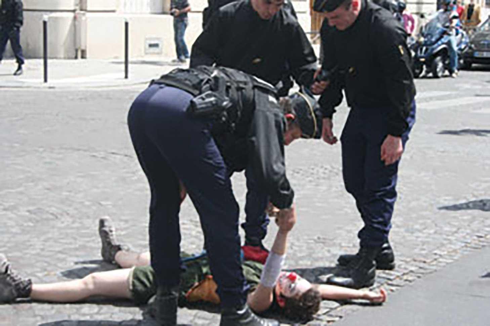
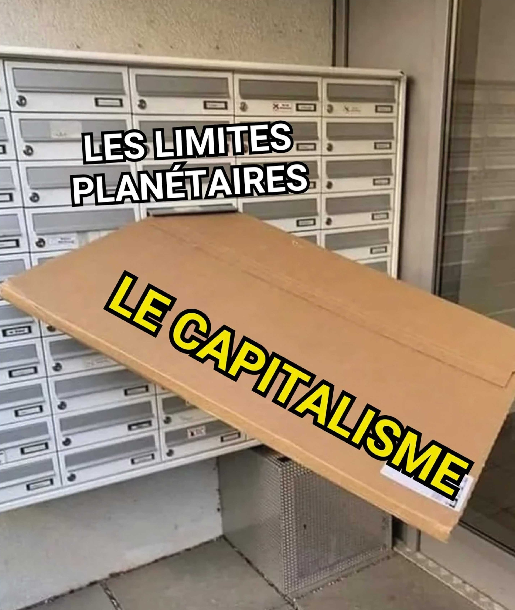
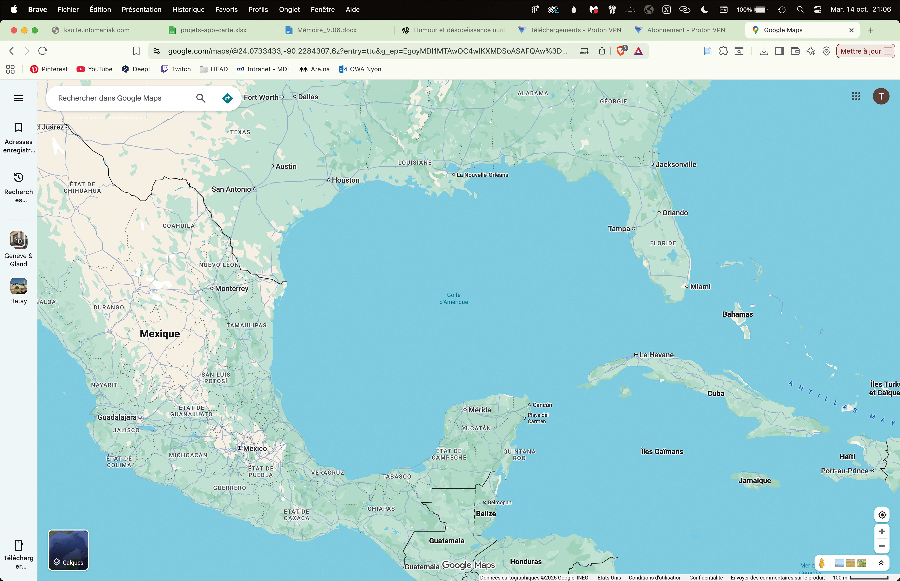
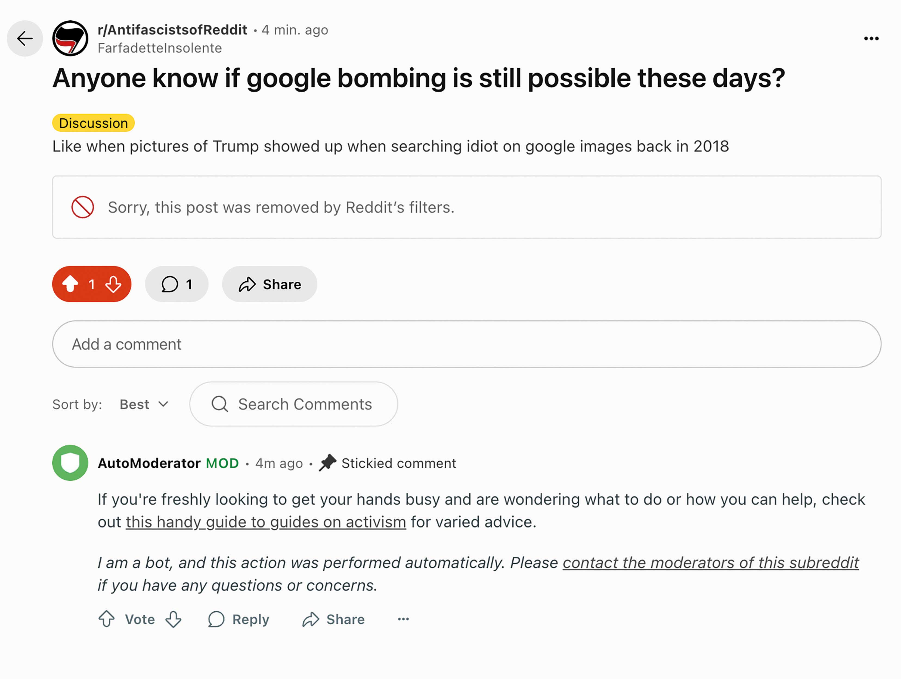
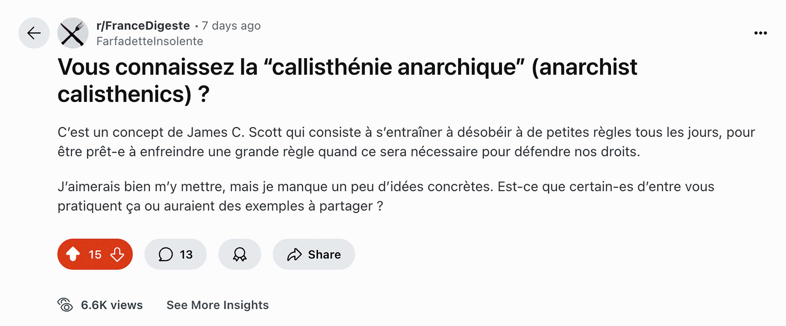
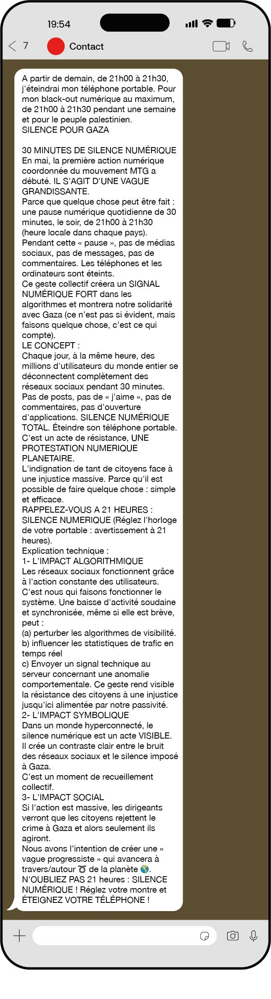
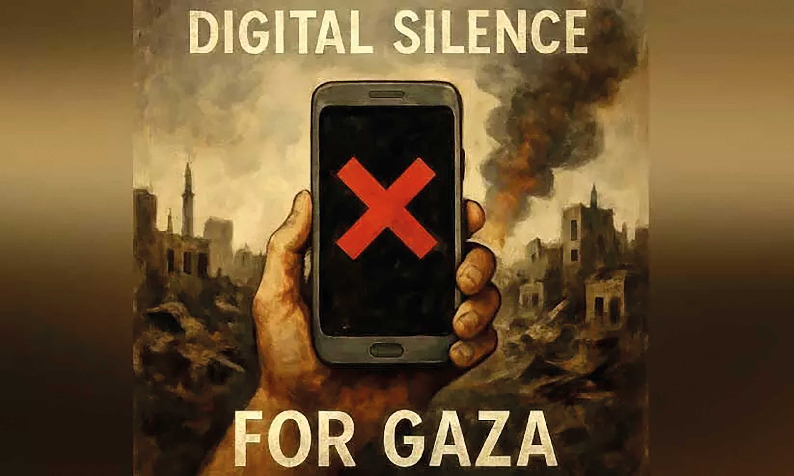

insolence.zip
infos
Mémoire de Master en Media Design, HEAD – Genève
Autrice : Tara Hächler
Tuteur : Félicien Goguey
Année : 2025
Résumé : Ce mémoire explore le rôle de l’humour dans les actions de désobéissance numérique collectives et son potentiel à encourager la participation. En analysant des exemples concrets et en s’appuyant sur des travaux académiques, il met en lumière les mécanismes par lesquels l’humour peut devenir un levier de contestation et de mobilisation dans l’espace numérique.
insolence /
Introduction
En 2018, lorsqu’un·e internaute cherchait le mot “idiot” sur Google Images, ce sont des photos de Donald Trump qui apparaissaient. Derrière ce coup de théâtre numérique se cachait un joyeux sabotage collectif : le Google Bombing.
En publiant massivement une image sur des sites web, la taguant avec un mot choisi, puis en cliquant dessus en boucle, l’algorithme a mordu à l’hameçon. Résultat : Google a été pris à son propre jeu, et a offert au monde une galerie présidentielle pour le moins peu flatteuse. Relayé dans les médias, le phénomène a pris plus d’ampleur et l’image du président américain s’est vue ridiculisée dans la sphère numérique.

Résultats de recherche pour “idiot” sur Google Images en 2018
Ici, l’humour devient un levier du peuple. L’espace numérique se transforme en terrain de jeu où l’organisation et la synchronisation des internautes parviennent à détourner l’algorithme en outil politique. Un outil qui se moque ou qui pointe simplement du doigt ce que beaucoup pensent tout bas. Toute personne ayant une connexion internet et un accès à Google pouvait y participer.
Ce type de rébellion numérique s’inscrit dans un champ lexical étendu : activisme numérique, cybermilitantisme, hacktivisme, désobéissance numérique. C’est cette désobéissance numérique que j’ai choisie d’étudier dans ce mémoire, pour sa spécificité et sa forte dimension morale, désignant ainsi les actions politiques, rendues publiques et non-violentes.[1] La désobéissance numérique, au sens strict, implique de s’opposer à une loi dans l’espace numérique. Mais en l’abordant sous un angle symbolique, elle ne se limite plus à l’infraction juridique. Il s’agit aussi de refuser ce qui est attendu dans un système donné. Boycotter une entreprise, refuser de répondre à un message ou encore détourner un algorithme sont autant de formes possibles de désobéissance numérique.
C’est dans ce registre symbolique que l’humour entre en jeu. En jouant avec les codes et en ridiculisant des puissant·es, il devient un moyen de remettre en question les normes bien installées et d’affirmer, sur un ton léger, un refus de se plier à l’ordre établi.
“Rire, c’est bon pour la santé”, avait déclaré de façon maladroite Johann Schneider-Ammann, ancien président de la Confédération, lors de la Journée des malades en 2016[2]. Si cette intervention a pu faire sourire par le décalage entre les propos, le ton et le contexte, elle rappelle aussi que l’humour peut être réparateur. L’humour amuse, mais il peut aussi désarmer, critiquer, et faire réfléchir.
“Pourquoi désobéir ? Il suffit d’ouvrir les yeux. La désobéissance est même à ce point justifiée, normale, que ce qui choque, c’est l’absence de réaction, la passivité.”
Gros, 2017, p.8
Les mots de Frédéric Gros, philosophe et professeur de pensée politique, résonnent particulièrement aujourd’hui, dans un contexte marqué par des inégalités croissantes. Les pratiques désobéissantes offrent aux plus vulnérables des outils de contestation, là où les rapports de force semblent écrasants. Il devient vital de s’organiser, se coordonner, et d’inviter plus de gens à résister contre les systèmes de domination grandissants. Comme l’explique Rita Raley, chercheuse en littérature numérique intéressée par l’activisme, dans Tactical Media, un ouvrage consacré aux pratiques de désobéissance numérique, l’imaginaire du changement ne peut être que collectif :
“Il n'y a pas de fantaisies proposées de changement systémique radical : il existe comme une possibilité dans le domaine de l'imagination – une autre technologie de simulation – mais il nécessite une action collective, une « foule de manifestant·es ».”[3]
Raley, 2009, p.10
La désobéissance numérique, lorsqu’elle repose sur l’action participative, ouvre les possibilités de changement et devient alors un terrain fertile pour les subversions inventives. Enfin, le numérique faisant désormais partie intégrante de notre réalité, la démocratie y est également en péril. Comme le mentionne Olivia Wainwright[4], collaboratrice au sein du projet Stop Hate Speech, qui lutte contre la haine en ligne :
“Les gens pensent souvent qu’Internet c'est autre chose. Mais c'est la vraie vie, Internet, c'est un prolongement de l'espace public.”
Il devient alors essentiel d’y réaffirmer notre capacité d’agir et de participer.
Devant ce constat, ce mémoire tentera de répondre aux questions suivantes : quel rôle joue l’humour dans les actions de désobéissance numérique collectives ? Comment peut-il être utilisé comme un moteur de participation ?
Dans un premier temps, nous analyserons la place de l’humour dans la politique, l’activisme et la désobéissance. Pour ce faire, nous examinerons la manière dont il est discuté dans la littérature académique, en portant une attention particulière à ses avantages, ses limites et ses risques, à travers des travaux en sciences sociales et politiques. Nous chercherons également à identifier les types d’humour fréquemment utilisés dans la désobéissance en s’appuyant sur des exemples. Nous étudierons la culture Internet, son humour et ses mécaniques, et observerons le cas des Anonymous. Afin de mieux comprendre l’aspect participatif, nous identifierons les différentes formes qu’il peut prendre. Nous étudierons ensuite deux cas pratiques participatifs qui mobilisent l’humour afin d’en observer les caractéristiques. Nous observerons ensuite deux cas pratiques où l’humour n’est pas privilégié, et essaierons d’identifier les caractéristiques de participation ainsi que les raisons pour lesquelles l’humour n’a pas été intégré à ces actions. Enfin, en revenant sur les principales observations réalisées, nous proposerons une liste de champs d’actions possibles sous la forme d’un manifeste pour la désobéissance numérique participative.
Une carte interactive accompagne ce mémoire. Elle permet de présenter des cas qui n’ont pas pu être étudiés dans ce mémoire. Le corpus de projets et d’actions sélectionnés est placé sur deux axes en fonction du niveau d’humour et de participation. Enfin, rappelons que l’humour et la participation s’inscrivent sur des échelles nuancées, et que l’humour, en particulier, reste une notion très subjective, qui est propre à chacun·e.
01 L’insolence du rire /
Le rôle de l’humour dans le contexte politique et l’activisme a déjà été largement discuté dans le domaine des sciences politiques, sociales et culturelles (Amoore, 2005 ; Hart, 2007 ; Reilly, 2019 ; Rogers, 2022 ; Sombatpoonsiri, 2016 ; Sørensen, 2016). Dans ce chapitre, nous mettrons en lumière dans quelle mesure et de quelles manières il peut être un outil dans la critique politique et la désobéissance. Nous développerons également les éléments propres à la culture Internet, ce qui nous conduira à examiner plus en détail le cas des Anonymous.
Dans The Global Resistance Reader (2005), Louise Amoore, professeure de géographie politique, démontre que l’usage de la comédie et du carnavalesque constitue une arme critique efficace. En citant Bakhtine, théoricien russe ayant travaillé sur la philosophie du rire et le carnavalesque, elle rappelle que la comédie a été progressivement écartée de la sphère politique pour être reléguée au domaine privé. L’autorité moderne s’est construite avec un ton sérieux, détaché de toute émotion, ce qui ouvre un espace dans lequel l’humour peut en remettre en cause les fondements symboliques. L’humour, intégré à la critique politique, exploite donc le sérieux attaché au pouvoir pour créer un effet de contradiction et de déstabilisation (Amoore, 2005, p.381).
Dans la continuité de cette approche, l’humour ne se manifeste pas uniquement dans le discours : il s’incarne aussi dans des formes visuelles, performatives et médiatiques qui relèvent du design et de la création artistique. Dans Design (&) Activism, Tom Bieling, chercheur en histoire et théorie du design, explore le rôle du design dans l’activisme. Il explique que de nombreux mouvements de contestation contemporains mobilisent l’humour dans la rhétorique, comme le Gezi Park Movement, les manifestations du G20, Occupy Wall Street, et l’Umbrella Movement. Ces pratiques, entre art et communication politique, produisent un langage visuel capable de renforcer la portée critique du message tout en favorisant la participation collective (Bieling, 2019, p.15).
Dans l’activisme, l’humour a été étudié comme pouvant apporter plusieurs avantages. C’est ce qu’a exploré Ian Reilly (2019), chercheur dans les domaines de la communication politique, de l’humour, de l’engagement civique et des médias. À la suite de l’observation d’un workshop organisé par le Yes Lab[6], atelier créatif mené par les Yes Men[7], il présente l’humour comme une ressource tactique pour l’action militante. D’après les discussions avec les participant·es, il a pu identifier que l’humour permettrait tout d’abord d’apporter un soutien émotionnel aux personnes engagées dans des luttes, comme une “stratégie de survie”. Ensuite, l’humour apparaît comme moteur d’engagement d’un mouvement collectif, en créant des liens entre des personnes de différents horizons grâce à l’empathie. Finalement, l’humour a été mentionné comme ayant un rôle dans la médiatisation des luttes, et plus globalement, la faculté d’attirer l’attention sur des problèmes (Reilly, 2019, p.131).
L’humour peut également revendiquer la non-violence et influencer l’opinion publique à se positionner en faveur des militant·es. Aux États-Unis, suite aux actions anti-immigration lancées par Donald Trump, des manifestations se sont organisées dans plusieurs villes. À Portland, en octobre 2025, des manifestant·es se sont muni·es de costumes gonflables de grenouilles, appelés le Portland Frog. Ce symbole, devenu culte en quelques jours, est représentatif de la non-violence.
“Ce qui est intéressant avec un costume comme celui-ci, c'est qu'il est non seulement caricatural et amusant, mais qu'il ne permet clairement pas de cacher des armes et empêche clairement celui qui le porte de se déplacer rapidement et de représenter une menace physique. Voir des policiers et des agents de l'ICE affronter quelqu'un comme ça ne fait que souligner l'absurdité absolument scandaleuse de ce qui se passe à Portland.”[8]

Manifestant·es de Portland avec des cosutmes de grenouilles
Modes de rire désobéissant
Afin de mieux comprendre les différentes formes d’humour mobilisées dans les pratiques de désobéissance, ainsi que les mécanismes qui les rendent efficaces, j’ai établi une typologie d’après l’étude de cas pratiques et de ressources littéraires. Cette classification n’a pas pour vocation d’être exhaustive : elle vise surtout à révéler les tactiques par lesquelles l’humour devient un moyen de contestation, de déstabilisation ou de cohésion au sein des mouvements militants.
L’humour carnavalesque
Nous avons tout d’abord l’humour carnavalesque, souvent utilisé dans l’espace public, notamment lors de manifestations dans les rues. Cette forme d’humour utilise la caricature, le déguisement et l’exagération pour créer un effet de surprise, une irrationalité qui déclenche le rire. Les grenouilles de Portland mentionnées plus haut en sont un exemple, tout comme le mouvement des clowns de la BAC (Brigade Activiste des Clowns), qui détourne l’acronyme de la Brigade Anti-Criminalité. Le 14 juillet 2009, ces clowns se sont invités à la fête en perturbant le défilé des chars militaires à Paris. L’absurdité a été encore plus imagée dans les scènes d’arrestation de certains clowns par la police[9].
️
La BAC lors de la journée du 14 juillet 2009
Clown arrêté par la police lors du 14 juillet 2009
L’humour noir
À l’opposé de ce ton festif, l’humour noir mobilise un rire plus inconfortable. Cette forme d’humour consiste à rire de l’horreur. En mettant en avant la violence et l’absurdité d’une situation, il permet d’attirer l’attention sur des réalités insoutenables. Un exemple parlant d’humour noir est une vidéo TikTok[10] publiée par une famille gazaouie qui met en avant ses enfants en train de se faire gronder (soulevés par leur t-shirt), avec la légende suivante :
“Quand ils pensent qu'être dans un génocide signifie qu'ils peuvent ne pas faire leurs devoirs”[11]
Le contraste entre la légèreté apparente et le contexte tragique crée un choc qui suscite à la fois réflexion, malaise et parfois le rire.

Capture d’écran de la vidéo Tiktok de @heyitsmeagainguys
L’ironie
Vient ensuite l’ironie, qui joue sur le décalage entre ce qui est affirmé et ce qui est réellement pensé. En détournant le sens d’un propos par l’exagération, elle sème le doute et invite à la réflexion critique. Un exemple en est la grève des étudiant·es de 2012 au Québec, qui luttaient contre la hausse des taxes de scolarité. Les militant·es ont créé des pancartes, des flyers et des slogans tels que :
“Pauvres : payez !”, “Plus de polices, moins d’artistes !”

Affiche de la manifestation des étudiant·es contre la hausse de taxes
Ces messages ironiques ont permis de dénoncer avec humour l’absurdité de la logique économique à l’origine de l’augmentation des frais de scolarité[12].
La parodie
Dans une mécanique proche, tournée vers la mise en scène des codes adverses, la parodie utilise les symboles de l’opposant et les tourne en dérision pour les désacraliser, attirer l’attention sur leur absurdité et parfois créer un doute chez l’audience. La campagne présidentielle de 2017 en France en est un exemple significatif : les affiches des partis politiques se retrouvaient à côté de parodies mettant en scène des personnages fictifs ou des personnalités publiques françaises, véhiculant un sens caché et une critique de l’actualité. Affichées dans les rues de Paris, ces créations détournaient les codes visuels des campagnes présidentielles pour en révéler la dimension artificielle et interroger le rapport entre image et message politique[13].
Affiches parodiques présidentielles durant la campagne de 2017
La moquerie et la satire
La moquerie et la satire ciblent plus frontalement une figure de pouvoir ou un système en les ridiculisant, cherchant à affaiblir son autorité symbolique. Lors d’une manifestation à Berne en mai 2025, contre l’inaction de la Suisse face au génocide en cours à Gaza, une pancarte a attiré mon attention. On y voit Ignazio Cassis, conseiller fédéral chargé des affaires étrangères, affublé d’un nez de clown et placé dans un théâtre. Au-dessus de lui, Benyamin Netanyahou le manipule comme une marionnette, orné d’une moustache évoquant un dictateur bien connu. La critique, ici, passe par la caricature pour mettre en lumière la complicité et le ridicule du pouvoir.

Pancarte observée en manifestation à Berne en mai 2025
Le prank
De manière plus performative, le prank (canular en français) s’appuie sur l’intrusion et la surprise pour bousculer un cadre établi. Le collectif The Yes Men en a fait sa spécialité. Ce duo d’activistes américains se fait passer pour des intervenants spécialistes dans des conférences professionnelles. Ils y performent des discours satiriques, à la limite du sérieux, qui ne sont parfois pas démasqués tout de suite. L’une de leurs actions s’est déroulée au sein d’une conférence du secteur des assurances. Ils se sont fait passer pour des employés d’Halliburton (entreprise pétrolière), mettant en avant une solution contre le réchauffement climatique : des combinaisons en forme de bulle à six pattes, qui nous rendraient invincibles face au climat extrême[14].

Les Yes Men lors de leur intervention au nom d’Halliburton
Les inside jokes
Enfin, les inside jokes, ou l’humour de connivence, s’adressent principalement à un public déjà convaincu. Comme l’exprime l’humoriste et militante Swann Périssé dans Bouffons !, il s’agit de “rire avec des gens qui pensent comme [nous]” (Périssé & Meurice, 2025, p. 28).
Les références et les points de vue partagés renforcent le sentiment d’appartenance et l’identité collective d’un groupe militant. C’est notamment cet humour que l’on peut rencontrer dans les spectacles de Swann Périssé, par exemple dans Le Dernier spectacle avant la fin du monde[15] qu’elle a écrit en une semaine suite à la dissolution de l’Assemblée nationale par Emmanuel Macron en 2024.
Trouver un équilibre
L’utilisation de l’humour dans l’activisme comporte également des risques. C’est ce que Majken Jul Sørensen, professeure en sciences sociales, a notamment exploré dans son livre Humour in Political Activism: Creative Nonviolent Resistance. Elle y décrit cinq risques liés à l’utilisation de l’humour par des militant·es.
Il existe premièrement un risque de ne pas paraître sérieux·ses. L’autrice souligne que les actions utilisant l’humour peuvent donner l’impression que les militant·es “s’amusent” et ne s’engagent pas réellement pour la cause défendue. Ce risque est renforcé si des éléments carnavalesques sont intégrés (Sørensen, 2016, p.140).
Le second risque est que l’humour soit mal compris, surtout quand on utilise l’ironie. L’action pourrait alors paraître offensante si le public n’est pas déjà sensibilisé ou si le ton est mal utilisé. L’ironie comporte également le risque de devenir élitiste lorsque l’aspect humoristique repose sur des références académiques ou culturelles qui ne sont pas maîtrisées par le plus grand nombre (Sørensen, 2016, p.142).
Le troisième risque concerne le mélange entre humoristique et non-humoristique. L’autrice explique que c’est un équilibre complexe à maîtriser, qui peut induire le public dans une confusion, et même déclencher des conflits au sein de l’organisation (Sørensen, 2016, p.144).
Le quatrième risque est que le ridicule puisse être perçu comme un abus. L’humour, particulièrement la satire, peut induire une moquerie ciblée, ce qui soulève des questions éthiques. Ce point est d’autant plus crucial en considérant que l’humour est aussi un outil utilisé par les oppresseur·euses. L’autrice explique que lorsqu’un groupe marginalisé est ciblé par de l’humour, cela peut devenir abusif (Sørensen, 2016, p.147).
Le dernier risque observé est la désillusion que peut causer le cynisme. L’autrice explique que l’humour satirique ou ironique peut parfois n’apporter qu’une critique négative, sans offrir d’alternative. Cela peut mener à la résignation ou au désengagement plutôt qu’à l’action (Sørensen, 2016, p.161).
Pour chacun de ces risques, Sørensen propose des points d’attention que j’ai résumés comme suit :
-
Il est important d’avoir un message politique clair pour éviter une mauvaise compréhension de l’action.
-
L’utilisation de l’ironie demande une certaine exagération et une bonne connaissance de son audience.
-
Il faut définir en amont à quel point l’humour et le sérieux sont mélangés, et évaluer la pertinence de ce choix avec toutes les personnes impliquées dans l’organisation.
-
Les jeux de pouvoir doivent être pris en compte lors de l’intégration de l’humour à des actions politiques. Il faut veiller à ne pas se ranger du côté des oppresseur·euses.
-
Il est important de proposer des alternatives à la situation critiquée pour ne pas paraître uniquement cynique.
La subversion 2.0
Avant de revenir à la désobéissance, il est utile d’évoquer certains archétypes de la culture Internet, qui nous permettront de mieux comprendre les codes humoristiques et les références sur lesquelles s’appuient certaines pratiques désobéissantes.
L’humour sur Internet est multiple et évolue selon les plateformes, les périodes, les langues ou les contextes culturels. Cette diversité s’explique notamment par la manière dont le numérique a transformé les rapports entre production et réception. Comme le souligne Bieling (2019), en mobilisant l’artiste Peter Weibel, les technologies de l’information ont contribué à démocratiser la créativité : les utilisateur·ices ne se contentent plus de consommer des contenus, il·elles peuvent participer activement à leur création et à leur diffusion. L’espace numérique devient alors un lieu d’expression collective, fondé sur la participation et la réappropriation des codes culturels (Bieling, 2019, p.15). Et cette participation n’est pas uniquement esthétique ou ludique, elle est aussi politique. En permettant à chacun·e de produire, commenter ou détourner des contenus, le numérique ouvre un champ d’expression où les opinions et les revendications circulent librement. Les plateformes numériques deviennent alors des espaces de débat, de confrontation et de mobilisation. Dans ce cadre, la culture Internet se construit comme un système participatif où les frontières entre créateur·ices et spectateur·ices, ainsi qu’entre expression artistique et discours politique, tendent à s’effacer. Cela rappelle que le numérique n’est pas dissocié de la réalité, comme évoqué dans l’introduction, où les dynamiques sociales et politiques s’y prolongent.
Dans cette partie, nous nous concentrerons sur quelques formes d’humour emblématiques, issues principalement de la culture occidentale, en anglais et en français, qui ont marqué l’imaginaire collectif.
Une grande partie d’Internet repose sur le langage écrit. Le “LOL” (Laughing Out Loud), “MDR” en français (Mort De Rire), ou encore “XD” (visage hilare à l’horizontale), sont des exemples simples et emblématiques de l’expression du rire. Ces exemples sont utilisés de façon différente selon les contextes, allant de l’ironie à la moquerie, en passant par la satire. Nous pouvons également citer les hoax, canulars informatiques envoyés par écrit, parfois présentés sous d’autres formes. Le but des hoax est de tromper, manipuler ou faire réagir. Dans ce contexte de prank, on peut également déceler une moquerie préméditée à l’égard des personnes qui vont croire à ces fausses informations et les relayer. Les spams peuvent entrer dans la catégorie textuelle eux aussi. Ils ne sont pas drôles par essence, mais ils peuvent prêter à sourire selon leur formulation et leur but.
Du côté visuel, les mèmes représentent une énorme partie des contenus humoristiques d’Internet. Ce sont des images accompagnées de texte, sans cesse répliquées, transformées et détournées. Frédéric Kaplan et Nicolas Nova leur consacrent un ouvrage, La culture Internet des mèmes, dans lequel ils montrent qu’il s’agit d’une pratique participative, où chacun·e peut à son tour créer un mème à partir d’un autre. Les mèmes ne se limitent pas au divertissement, ils ont également été utilisés comme vecteurs de critique politique et sociale, parfois pour contourner la censure (Kaplan & Nova, 2016). Les formes d’humour utilisées dans les mèmes sont difficiles à répertorier, car il en existe énormément. Nous pouvons cependant noter l’ironie, l’humour noir, les inside jokes et le carnavalesque, dans sa dimension absurde, qui sont très souvent mobilisés. À côté des mèmes, nous avons aussi les GIFs animés et les stickers, souvent intégrés aux conversations numériques.
Meme créé part @soifdesens sur Instagram
Les vidéos humoristiques sur Internet constituent une autre partie importante de cette culture. Sur TikTok ou dans la partie Reels d’Instagram, apparaissent de nouvelles mécaniques basées sur la reproduction, la parodie et les tendances virales. Aux côtés de ces plateformes, les vidéos YouTube mettent notamment en scène des pranks et des compilations de fails (chutes ou ratés), parfois reprises sous forme de mèmes. Avec l’émergence des influenceur·euses, des vidéos humoristiques face caméra ou bénéficiant d’une production professionnelle ont également vu le jour.
Le troll
Certaines créatures sont réapparues dans l’ère numérique. Notamment le troll, ressorti de la mythologie scandinave pour atterrir dans nos fils de discussions, forums, jeux vidéo, ou encore nos réseaux sociaux (Nova, 2024, p.95). Il est décrit par Nicolas Nova dans Persistance du merveilleux :
“Le troll [...] est un type de participant aux conversations en ligne qui [...] agit en publiant délibérément des messages provocateurs, offensants, voire hors sujet.”
Nova, 2024, p.95
Nova mentionne également leur évolution en un rôle de plus en plus politique. Le troll opère avec un humour provocateur, malveillant, qui peut aussi faire appel à l’ironie et au cynisme. La personne à l’origine d’un acte de trolling peut être représentée, ou se représenter elle-même, par son équivalent visuel : la trollface. Cette image fonctionne comme une inside joke : ceux qui la reconnaissent savent généralement à quoi s’attendre.
Trollface
Le détournement
L’espace numérique étant basé sur des machines et du code, développés pour des usages précis, il offre la possibilité d’être utilisé autrement, de manière inattendue. L’anthropologue Jean-Paul Fourmentreaux décrit dans AntiDATA :
“Utiliser et tordre les armes du dominant pour en déjouer les déterminismes et donner à voir les arcanes du pouvoir de la coercition.”
Fourmentreaux, 2020, p.57
Il s’agit ici de désobéir au sein des structures dominantes.
Le détournement amuse : parfois par l’ironie d’un système retourné contre lui-même, parfois simplement par l’usage inattendu d’un outil hors de sa fonction habituelle. Pour illustrer le détournement, nous allons rapidement étudier l’exemple de Google Maps Hacks, une performance réalisée par Simon Weckert, se décrivant comme un magicien numérique moderne et un bricoleur espiègle. Lors de cette performance réalisée en 2020, l’artiste s’est baladé dans les rues de Berlin avec un chariot contenant 99 smartphones, tous connectés à Google Maps, avec le même itinéraire. Le détournement a opéré lorsque l’application a affiché un bouchon, pensant que ces 99 téléphones représentaient un·e utilisateur·ice dans une voiture. Dans ce cas, le détournement prend forme dans la manipulation du système automatisé de Google Maps pour le tromper. Cette performance avait pour but de critiquer le capitalisme numérique grandissant, dont Google Maps est un acteur majeur, qui exerce un pouvoir sur notre perception de la réalité[16].

Images de la performance Google Maps Hacks
Certains réseaux sociaux sont également détournés de leur usage initial à des fins politiques. C’est le cas de Discord, plateforme de discussion initialement conçue pour les jeux vidéo, qui a été utilisée récemment au Népal pour organiser des manifestations, répandre les symboles de la révolution et même organiser l’élection d’une nouvelle Première ministre[17].
Manifestation au Népal menée par la Gen Z
S’en sont suivies d’importantes manifestations au Maroc, menées par le collectif Gen Z 212, qui communiquait notamment à travers Discord et TikTok[18]. À Madagascar, le schéma était le même[19] :
“Le mouvement qui se fait appeler Gen Z Madagascar est né en ligne. Organisé via Telegram, TikTok et X (anciennement Twitter), il a emprunté des symboles de protestation mondiaux, du drapeau pirate de One Piece au slogan “We Want to Live” (“Nous voulons vivre”). Ces symboles reflétaient la manière dont une génération native du numérique, élevée dans un contexte d'inégalités et de lassitude politique, réinvente la protestation à travers l'humour, la créativité et l'urgence morale.”[20]
On peut également citer Twitter et Facebook, qui ont souvent été utilisés pour organiser et coordonner des manifestations.
Les Anonymous
Il existe un coin particulier du web appelé 4chan, berceau de nombreux archétypes de la culture Internet, comme les mèmes et le troll. Fondée sur l’anonymat et une modération presque absente, la plateforme favorise une grande liberté d’expression qui s’accompagne de dérives graves. On y trouve un mélange de contenus provocateurs, d’humour transgressif et de pranks, mais aussi des discours extrémistes, racistes ou misogynes, qui lui valent sa réputation de lieu aussi influent que controversé[21]. C’est également là qu’est né l’un des collectifs emblématiques de la désobéissance numérique : les Anonymous.
L’anthropologue Gabriella Coleman a enquêté pendant plusieurs années sur les Anonymous. Dans son livre, elle décrit les actions et mécanismes utilisés par ce groupe d’activistes, notamment le rôle du lulz, très attaché à l’identité des Anonymous, qui est un “terme dérivé de lol désignant une forme d’humour grinçant, souvent malveillant” (Coleman, 2016, p.9).
Le groupe s’est construit sur le phénomène du troll et du lulz, avant la naissance d’une branche activiste du groupe (Coleman, 2016, p.7). Aujourd’hui, les Anonymous sont un groupe d’activistes reconnus à l’international, faisant grincer des dents les entreprises ou gouvernements qu’ils attaquent en combinant humour et sabotage numérique.
Un exemple récent d’action s’est déroulé au début de la guerre en Ukraine. Les Anonymous ont piraté les fréquences de la radio militaire russe pour y afficher la fameuse image provocatrice du troll[22]. Dans ce cas, la logique du prank est utilisée en s’infiltrant dans le système radio sécurisé. On peut observer une forme d’humour noir, où l’armée responsable d’une guerre est tournée en dérision sur un ton léger. La moquerie peut également être observée avec l’utilisation de la trollface dans un contexte très sérieux de guerre, ridiculisant ainsi l’armée russe.

Troll apparu sur la radio militaire russe
Dans ce chapitre, nous avons exploré les multiples formes et fonctions de l’humour comme outil de critique politique et de désobéissance. L’humour y apparaît comme une rupture avec le sérieux du pouvoir, un moyen de cohésion entre militant·es et un vecteur d’attention publique. Différents types d’humour désobéissants ont été identifiés : carnavalesque, humour noir, ironie, parodie, satire, prank et inside jokes. Les risques liés à son usage, comme la mauvaise interprétation, la moquerie excessive ou le cynisme, rappellent la nécessité d’une pratique consciente et responsable. L’analyse s’est ensuite élargie à la culture Internet, où l’humour visuel, textuel et participatif se manifeste notamment à travers les mèmes et les détournements. Enfin, le cas des Anonymous illustre la rencontre entre humour, activisme et désobéissance numérique, où la provocation devient un instrument de résistance. Ce collectif n’a plus rien à prouver. Il a réussi à se créer une place dans l’imaginaire collectif et la culture d’Internet.
Mais les actions des Anonymous, comme celles des hackers de manière plus générale, sont précises et demandent des compétences techniques avancées. Ce n’est donc pas à la portée de tout le monde. La question se pose alors : où se situe la limite entre ce qui relève du participatif et ce qui ne l’est pas ?
02 La rébellion contagieuse /
La participation, c’est avant tout une histoire de pluralité. C’est l’art de faire ensemble, même si ce “ensemble” peut parfois être flou, mouvant, ou virtuel. Il n’existe pas une seule forme de participation. En observant le corpus de projets et d’actions sélectionnés, j’ai tenté de dresser une classification, pensée comme une échelle. Dans la carte comme dans cette classification, la dimension participative est pensée en quantité de personnes pouvant participer, non pas par le degré d’effort fourni.
Participation active vs. passive
Dans la participation active, tout le monde agit, crée, détourne, et la réussite dépend d’une action concrète de la part des individus. On peut y distinguer la participation limitée de la participation accessible. En effet, lorsqu’une action exige savoirs, privilèges ou bravoure, sa participation est limitée : le hacking, par exemple, n’est accessible qu’à cell·eux qui maîtrisent le code et savent gérer les risques juridiques qu’il·elles encourent.
La participation accessible, elle, permet à tout le monde de s’engager, par exemple par des clics : rien d’héroïque, mais suffisant pour créer du nombre. Reste qu’ ”accessible” est toujours relatif : sans appareil, connexion ou capacité motrice, l’accès disparaît.
À l’opposé de cette participation active, être spectateur·trice fait parfois partie du dispositif. L’audience devient composante de l’action, sans agir concrètement, on peut alors parler de participation passive.
Finalement, entre la participation active et passive existe une zone intermédiaire : celle où l’on observe sans participer pleinement, mais où l’on contribue tout de même à la diffusion du projet, en en parlant, en le relayant, en le commentant. Dans ce cas on ne crée pas, mais on amplifie.

Échelle de classification des formes de participation
Pour la suite du mémoire, j’ai décidé de cibler les actions qui montrent une participation active et accessible, pour que plus de personnes puissent se joindre à la désobéissance numérique. Cette idée s’inscrit dans le concept de Matt Ratto et Megan Boler : le DIY Citizenship, ou la citoyenneté faite par soi-même. Ils décrivent dans leur livre des pratiques artistiques, culturelles, technologiques et politiques mettant en avant un engagement participatif par l’action, qui nous permettent de définir nous-mêmes dans quelle citoyenneté nous souhaitons évoluer “en remettant en question le statu quo et les conceptions normatives de « ce qui doit être »”[23] (Ratto & Boler, 2014, p.5).
Cette approche promeut l’action par la population. Bieling (2019) mentionne également que les mouvements de protestations sont souvent enrichis par la diversité des profils des participant·es :
“Souvent, les « professionnels » et les « non-professionnels » (par exemple en termes d'expérience politique ou professionnelle dans le domaine du design) agissent ensemble et apprennent les uns des autres. Parfois, ce sont les designers qui fournissent les outils et les formats appropriés. Avec les designers-activistes (ainsi que les « artivistes »), le champ des acteurs s'est élargi. Cela peut être considéré comme un phénomène à la fois social et technologique.”[24]
Bieling, 2019, p.15
Et comme le souligne Frédéric Gros :
“L’insurrection ne se décide pas. Elle saisit un collectif, quand la capacité à désobéir ensemble redevient sensible, contagieuse, quand l’expérience de l’intolérable s’épaissit jusqu’à devenir une évidence sociale.”
Gros, 2017, p.9
Comme une manifestation dans les rues, une manifestation en ligne, qui rassemble et devient contagieuse. Dans le monde réel comme dans le numérique, ces actions ont besoin d’une participation à grande échelle, et c’est cette opportunité que nous offre l’espace numérique.
Le boycott
Le boycott est un exemple d’action où la quantité définit l’impact. En effet, si une petite partie de la population se met à refuser les produits ou services d’une entreprise particulière, l’entité visée ne sera probablement pas atteinte. Mais si c’est une majorité qui refuse de consommer, au même moment, les statistiques de ventes chuteront et enverront un message fort à l’entité en question. C’est ce qui s’est passé en septembre 2025 avec les filiales Carrefour au Koweït et à Bahreïn. Carrefour est accusé de soutenir l’armée israélienne, notamment en fournissant des rations alimentaires. La population s’est organisée et a refusé d’acheter les produits de l’entreprise, ce qui a conduit à la fermeture de leurs filiales au Koweït, à Bahreïn et, plus tôt dans la même année, à Oman et en Jordanie[25].

Illustration pour le boycott de Carrefour
L’article mentionne également que les campagnes en ligne ont élargi la portée du boycott. L’espace numérique offre alors la possibilité de communiquer et de s’organiser. En effet, ces derniers mois, un grand nombre d’appels au boycott dans le contexte du génocide à Gaza sont publiés sur les réseaux sociaux. Les approches varient, entre humour et sérieux, productions professionnelles et vidéos d’amateur·ices.
Le spam
On observe également des publications sur les réseaux sociaux qui encouragent l’envoi massif d’emails à des responsables politiques, PDG d’entreprises et autres figures influentes. Des modèles d’emails et des services d’envoi automatisés sont mis à disposition en ligne pour faciliter la démarche. C’était le cas de la flottille Global Sumud, organisée entre septembre et octobre 2025 . La campagne visait à demander aux gouvernements de protéger la flottille et ses participant·es, en route vers Gaza pour y acheminer de l’aide humanitaire. Les utilisateur·ices pouvaient sélectionner des pays dans une liste, avec des modèles d’emails déjà traduits dans chaque langue correspondante. L’envoi en masse d’emails automatisés correspond à une forme de spam. Le but n’est pas que chaque email soit lu et que les personnes contactées y répondent, mais de montrer qu’un nombre important d’utilisateur·ices ont souhaité communiquer une même idée contestataire, et potentiellement créer une panne. Tout comme une route sera inaccessible aux voitures pendant une manifestation, si le nombre d’emails est très élevé, les personnes les recevant ne pourront probablement plus lire aucun email, même ceux qui ne concernent pas l’action.
Cette manœuvre se rapproche d’une attaque par déni de service (DoS), considérée comme une action illégale de hacking, qui consiste en l’envoi de requêtes informatiques en masse pour rendre un système inutilisable. Une autre tactique similaire de détournement utilisée à des fins protestataires est le black fax, qui consiste en l’envoi d’un grand nombre de pages noires à un télécopieur pour produire une panne à distance et coûter cher en papier et en encre (Nova & Goguey, 2020).

Illustration d’une série de black fax
Les Anonymous ont utilisé à maintes reprises ces tactiques de pannes. Notamment dans le cadre du Project Chanology, qui avait pour cible l’Église de la Scientologie. Cette organisation religieuse sectaire s’est d’abord fait pirater et a vu une vidéo interne de Tom Cruise, membre de l’église, fuiter sur YouTube, la rendant ainsi accessible au grand public. L’église a ensuite fait supprimer cette vidéo, ce qui a été considéré par les Anonymous comme une censure et une atteinte à la liberté d’expression. C’est là qu’une série d’attaques contre l’église s’est mise en place sur 4chan. Ils ont procédé à plusieurs attaques de black fax et de dénis de service distribué (DDoS), menant à la panne de leur site web. Le projet s’est également transposé au monde réel, où des manifestations dans les rues se sont organisées pour dénoncer la dangerosité de l’Église de la Scientologie. Toutes ces actions ont permis de mettre en lumière les pratiques malsaines de l’église[26].

Manifestation contre l’Église de la Scientologie avec les Anonymous
Le spam et la panne sont organisés et sérieux, mais peuvent devenir humoristiques par l’ironie de la situation : détourner un service public et des outils bureaucratiques pour immobiliser une institution, retirant ainsi un peu du sérieux et du pouvoir qui leur est généralement attribué.
Lac de Genève
Observons maintenant un cas plus léger, basé sur le détournement d’une application commune de navigation, qui concerne le lac Léman dans l’application Plans d’Apple . Durant l’été 2025, des utilisateur·ices ont constaté que le lac communément nommé “Léman” apparaissait sous l’appellation “lac de Genève” dans l’application. Cette découverte a rapidement circulé sur les réseaux sociaux et dans certains médias. Les publications expliquaient qu’il était possible de corriger cette dénomination en signalant une erreur dans l’application et en proposant un autre nom. C’est d’ailleurs la méthode qu’un groupe de Genevois·es est soupçonné d’avoir utilisé pour provoquer cette modification[27].
Les médias ayant relayé l’information ont publié une vidéo qui montre comment rectifier le problème : signaler en masse le nom du lac dans l’application et suggérer son nom original[28].

Le lac Léman renommé “lac de Genève” dans l’application Plans
Quelques jours plus tard, le lac a retrouvé son nom, “lac Léman”. Entre-temps, d’autres créateur·ices de contenu ont étendu la démarche, jusqu’à renommer le lac en “lac de Lausanne”, ou, de manière plus provocatrice, rebaptiser le jet d’eau de Genève, symbole emblématique de la ville, en “jet d’eau de Lausanne”[29].
Publication de @faciesbasane sur Instagram où il signale le jet d’eau pour le renommer
Cette action ne portait pas de message politique en lien avec une lutte spécifique, mais elle révèle néanmoins un détournement volontaire de l’outil numérique à des fins de provocation, emblématique du trolling.
Cette pratique de détournement s’appelle le Mass Reporting (signalement en masse), mais le terme est généralement employé pour décrire les actions contre des comptes ou des publications sur les réseaux sociaux. Sur GitHub, il existe des répertoires contenant du code permettant de réaliser un Mass Reporting avec un seul appareil, l’un d’eux mentionne formellement que son utilisation est réservée à des fins d’éducation[30], un autre ne fait part d’aucun avertissement, et met même en avant sa facilité d’utilisation[31].
Il existe plusieurs variantes d’une telle action : le bombardement d’avis dans les applications (Review Bombing), de commentaires ou d’hashtags sur les réseaux sociaux, l’utilisation de bots qui répondent automatiquement à certains propos, ou encore le bombardement de moteurs de recherche (Google Bombing), que nous allons étudier plus en profondeur dans le cas suivant.
Dans le cas du lac Léman, l’usage de la provocation dans cette éternelle querelle entre les Genevois·es et les Vaudois·es a entraîné un grand nombre de réactions. D’un côté comme de l’autre, la population s’est mobilisée, probablement avec un sourire en coin contagieux.
Cet exemple rappelle également que les cartes sont politiques, que ce soit pour la reconnaissance de certains pays ou le placement des frontières. Trump, par exemple, a souhaité renommer le Golfe du Mexique en Golfe d’Amérique, ce qu’il a réussi à faire. L’article du Monde[32] qui décrit cet événement affirme que depuis les États-Unis, sur Google Maps, seule la dénomination Golfe d’Amérique apparaît. J’ai pu vérifier cette information grâce à l’utilisation d’un VPN[33], tandis qu’en Europe, c’est écrit : Golfe du Mexique (Golfe d’Amérique).
La présidente du Mexique, Claudia Sheinbaum, a répondu avec satire et ironie en formulant le souhait de voir les États-Unis s’appeler ”Amérique mexicaine”, d’après une ancienne carte. La légèreté de sa réponse désamorce le conflit diplomatique en évitant une confrontation directe. On peut également y déceler une critique implicite du pouvoir symbolique des cartes et l’absurdité de leur utilisation pour assouvir une soif de pouvoir. L’utilisation de l’humour semble également permettre d’attirer l’attention du grand public tout en influençant favorablement l’opinion internationale.
Golfe du Mexique sur Google Maps en se positionnant aux États-Unis avec un VPN
Google dit que Trump est un idiot

Mème qui dit que Trump est un idiot, publié la même année que le Google Bombing
En parlant de Donald Trump, revenons sur le cas présenté en introduction, qui l’a sûrement moins fait jubiler : le Google Bombing. Une image du président américain a vraisemblablement été popularisée sur Reddit, plateforme communautaire où les utilisateur·ices partagent et commentent des contenus au sein de forums thématiques appelés subreddits, selon un système de vote qui détermine la popularité des publications. C’est grâce à l’action participative et la synchronisation que l’image de Trump s’est retrouvée dans les résultats de recherches du mot “idiot” dans Google Images. Cette moquerie collective a toutefois été temporaire, car ces images ont rapidement disparu[34].
Avatar créé sur Reddit
C’est là qu’intervient FarfadetteInsolente, mon identité Reddit créée à cette occasion. Sur la plateforme, FarfadetteInsolente semble avoir trouvé un post qui a participé au déclenchement de ce phénomène[35]. Le titre du post rapporte qu’un sondage externe a été fait en demandant quel mot définissait le mieux Donald Trump. Et c’est “idiot” qui a récolté le plus de votes. Ce post Reddit a obtenu 27 000 upvotes et 13 000 commentaires.
Dans d’autres subreddits traitant du sujet, certain·es demandent comment y participer[36]. Une réponse décrit qu’il suffit de chercher “idiot” et de cliquer sur l’image de Trump plusieurs fois d’affilée. Un·e autre utilisateur·ice décrit que la tactique fonctionne mieux avec des termes rarement cherchés sur Google Images, ce qui est le cas du mot “idiot”[37]. Un autre commentaire apparu plusieurs fois est :
“We did it Reddit!” (On l’a fait, Reddit !).
Ce qui laisse penser que l’action était intentionnelle. Mais elle semble également avoir été alimentée organiquement, notamment grâce à des médias qui ont relayé ce phénomène. Cela a contribué au Google Bombing en ajoutant de nouvelles images du président associées au mot “idiot”. Il semble donc que cette action ait été un mélange d’actes individuels intentionnels et de réactions organiques, que ce soit de la part des médias ou d’utilisateur·ices amusé·es par le phénomène.
FarfadetteInsolente a essayé de revenir sur le sujet en postant une question dans un subreddit[38]. Mais la question a été effacée par la modération quelques secondes après sa publication.
Capture d’écran du post Reddit effacé
Elle a également essayé d’entrer en contact individuellement avec des utilisateur·ices ayant commenté les publications à l’époque de l’action, sans réponse, étant limitée à cinq messages d’invitations sur la plateforme. Elle avait l’espoir de rallumer la flamme chez des utilisateur·ices, pour savoir si et comment ce détournement algorithmique fonctionnerait encore aujourd’hui.
Quand on cherche “Google Bombing” sur le web, beaucoup de résultats proviennent de sites d’agences de communication numériques. Cette tactique a en effet son pendant commercial. Influencer les algorithmes de recherche, c’est également le combat des entreprises et acteurs du numérique. Le Google Bombing n’est pas réservé aux images, il est aussi utilisé pour manipuler les résultats de recherche de sites web. L’agence V-Labs, spécialisée en stratégie numérique, explique que le Google Bombing est utilisé à des fins “satiriques, politiques ou malveillantes”[39].
L’agence 50A[40] qualifie ces techniques de Black Hat (un terme utilisé pour qualifier des actions de hacking malveillantes, avec son opposé le White Hat qui a des buts honorables) “qui ne sont pas recommandées pour un référencement SEO optimal”.
On peut alors se demander pourquoi ces agences le mentionnent. Il semblerait qu’elles cherchent à dissuader leurs client·es d’utiliser cette technique, et à être informé·es des vulnérabilités qui peuvent être utilisées à leur encontre. L’agence V-Labs mentionne aussi que les algorithmes auraient été entraînés entre-temps pour reconnaître ce type de phénomène :
“La qualité des liens est maintenant un facteur beaucoup plus important que la simple quantité, ce qui réduit l’efficacité de telles attaques.”
Ce qui est confirmé par le site de vulgarisation scientifique Techno-Sciences[41] :
“Quand il détecte un bombardement, celui-ci propose des liens ayant un rapport avec cette technique plutôt que le site original.”
Mais la mise à jour de l’algorithme datait de 2007, ce qui veut dire que le Google Bombing de Trump a pu se produire après. Une hypothèse serait que les algorithmes aient développé une vigilance accrue pour les résultats de sites web, mais pas pour les résultats d’images. Reste que le phénomène ne semble plus pouvoir durer dans le temps comme cela a pu être le cas autrefois. En effet, jusqu’à 2007, cette pratique semblait bien plus présente dans l’espace numérique.
Le site Techno-Sciences propose une liste d’exemples de Google Bombing de 2003 à 2007 : en 2003, en cherchant sur Google “french military victories”, le premier résultat affichait une page d’erreur, comme s’il n’y avait pas de réponses, avec une invitation à plutôt chercher “french military defeats”. La même année, “misérable failure” renvoyait au site de la Maison Blanche, sur la page de la biographie de George Bush, avec ensuite les sites de Jimmy Carter et Michael Moore. En 2004, “gros balourd” affichait une biographie du Premier ministre français Jean-Pierre Raffarin. Et en 2007, lorsqu’on cherchait “Programme Ségolène” (référence au programme politique de Ségolène Royal), le troisième résultat était l’article Wikipédia sur le Vide.
En détournant les moteurs de recherche, les actions de Google Bombing ridiculisent le pouvoir, mettent en avant l’opinion publique, sans pour autant avoir besoin d’un discours direct. Ces actions deviennent mémorables et virales, ce qui peut également être un vecteur d’adhésion collective.
S’entraîner à désobéir collectivement
Les actions numériques nécessitant peu d’efforts peuvent être considérées comme du slacktivisme (ou clicktivisme), un terme à connotation négative. C’est une pratique qui prend en compte le fait de signer une pétition en ligne, d’envoyer des emails, de liker des publications, etc. Evgeny Morozov, chercheur et écrivain dans le domaine du progrès technique et numérique, fait part de ses critiques dans son livre The Net Delusion: The Dark Side of Internet Freedom :
“Cell·eux qui sont séduit·es par la promesse de l'activisme numérique ont souvent du mal à le distinguer du “slacktivisme”, son cousin numérique plus dangereux, qui conduit trop souvent à une promiscuité civique – généralement le résultat d'une frénésie d'achats dans le supermarché de l'identité en ligne qu'est Facebook – qui donne aux activistes en ligne le sentiment d'être utiles et important·es, alors qu'ils ont en réalité très peu d'impact politique.”[42]
Morozov, 2011, p.189-190
Le risque du slacktivisme est donc d’avoir l’impression de sortir de l’impuissance et d’être utile, sans réellement avoir d’impact.

Illustration du slacktivisme
Il semble évident que de simples clics ne suffisent pas à provoquer une révolution. Mais en considérant le slacktivisme comme une première étape, il pourrait permettre à plus de personnes d’être informées des mouvements et leur donner la possibilité de s’impliquer sur le long terme. Il pourrait également être une manière de pratiquer la callisthénie anarchique, autrement dit, l’entraînement à la désobéissance ou “fitness of resistance”. Sur TikTok, une vidéo[43] a attiré mon attention sur ce concept, premièrement amené par James C. Scott, professeur de sciences politiques et d’anthropologie, dans Two Cheers for Anarchism :
“Un jour, vous serez appelé·e à enfreindre une loi importante au nom de la justice et de la rationalité. Tout en dépendra. Vous devez être prêt·es. Comment allez-vous vous préparer pour ce jour où cela comptera vraiment ? Vous devez rester « en forme » afin d'être prêt·e lorsque le grand jour arrivera. Ce dont vous avez besoin, c'est d'une « gymnastique anarchiste ». Chaque jour ou presque, enfreignez une loi insignifiante qui n'a aucun sens, même s'il ne s'agit que de traverser hors des passages piétons. Utilisez votre propre tête pour juger si une loi est juste ou raisonnable. De cette façon, vous resterez en forme et, lorsque le grand jour viendra, vous serez prêt·e.”[44]
Scott, 2012, p.4-5
Faire de la désobéissance une pratique sportive, c’est original. Le propos a beau être sérieux et pertinent, le concept me fait sourire. On ne serait donc plus des slacktivistes fainéant·es mais des anarchistes en entraînement.
James C. Scott a développé ce concept lors d’une enquête de terrain réalisée dans une ville en Allemagne. Il a identifié que la majorité des habitant·es ne traversaient pas au feu rouge alors qu’il n’y avait aucune voiture. Les personnes pointaient alors du doigt et désapprouvaient visiblement les personnes qui désobéissaient au bonhomme rouge (Scott, 2012, p.3-4). Lorsqu’il a expérimenté lui-même le fait de traverser au feu rouge, le regard externe qui pesait sur lui était intimidant :
“J'ai été surpris de voir à quel point j'ai dû rassembler tout mon courage pour traverser la rue malgré la désapprobation générale. Mes convictions rationnelles semblaient si insignifiantes face à la pression de leurs réprimandes."[45]
Scott, 2012, p.4
Même si la dimension participative n’est pas explicite dans son concept, elle reste un facteur. En effet, plus les individus vont se sentir jugés lorsqu’ils font quelque chose, moins ils vont oser. Donc si on s’y met à plusieurs, désobéir sera sûrement moins effrayant. Et selon le concept de Scott, plus on pratique, moins on a peur.
L’aspect participatif du concept de Scott est également visible sur Internet, où l’on peut observer plusieurs pages qui discutent du sujet. Il existe par exemple une sorte de manifeste de la callisthénie anarchique sur le blog Saguaros & Sabotage[46], qui invite les lecteur·ices à participer en donnant des exemples à faire au quotidien :
“Sortez des sentiers battus, enjambez les barrières et traversez la route où bon vous semble. Taguez votre signature là où tout le monde pourra la voir. Volez des fournitures au travail et partagez-les librement. Évitez de payer le ticket et sortez par la porte de sortie. Posez les questions qu'on vous décourage de poser et dénoncez les petites injustices alors que vous seriez peut-être resté·e silencieux·se. Affrontez ce type louche et faites-le partir. Volez ce drapeau américain et brûlez-le. Faites un petit vol à l'étalage aux dépens de l'entreprise. Faites tout ce que vous pouvez sans vous faire prendre.”[47]
J’ajouterais : si vous vous faites prendre, expliquez que vous pratiquez en réalité une sorte de gymnastique un peu spéciale.
Sur Reddit, le concept suscite des débats contrastés. Dans le subreddit r/canadaleft, une personne présente la callisthénie anarchique et s’interroge sur la manière de la pratiquer[48]. Cette proposition divise : d’un côté, certain·es internautes insistent sur le fait qu’il s’agit bien de remettre en cause des tabous sociaux ou des règles injustes au quotidien, comme défier des comportements discriminatoires ou contester l’autorité d’un·e employeur·se. De l’autre, plusieurs réponses tournent la pratique en dérision, en la réduisant à des incivilités banales ou absurdes.
Sur le subreddit r/anarchism, la discussion s’oriente vers des exemples concrets d’actions possibles, allant du jardinage de guérilla à des formes discrètes de défi à l’autorité[49]. Certain·es participant·es soulignent toutefois les risques contre-productifs de certaines actions dans l’espace public, tandis que d’autres revendiquent une approche plus symbolique ou personnelle, en accumulant de petits gestes de résistance au quotidien.
Dans la partie francophone de Reddit, aucune mention de ce concept n’a été trouvée. FarfadetteInsolente est là pour changer ça. Elle a publié une question sur la callisthénie anarchique et demande quelles pratiques elle pourrait intégrer dans son quotidien[50]. Le subreddit r/FranceDigeste a été choisi pour son taux d’activité élevé, où les sujets abordés sont souvent politiques. Quelques minutes après le post, il récolte déjà 4 upvotes et 2 commentaires. Le sujet semble attirer l’attention des internautes. Une semaine plus tard, il a été vu par 6600 personnes et obtient 15 upvotes et 13 commentaires.
Question posée sur la callisthénie anarchique dans r/FranceDigeste
Les réponses sont variées, beaucoup utilisent l’ironie ou la satire :
“Vu la quantité de priorités à droite qu'on me refuse juste parce que je suis cycliste, il doit y a voir un paquet d'anarchistes sur les routes de France... Donc prend ton vélo et crame tous les feux, camarade ! La Révolution passera au rouge ! Blague à part je connaissais pas, merci du partage.”
AegoliusOfBurgundy, 2025
“J’arrache les prospectus de Zemmour des mains de ces partisans. Et je les déchire.”
Desiderius-Erasmus, 2025
D’autres sont plus sceptiques. 99ShahedOfBakuOfNine pense que pratiquer la callisthénie anarchique en grillant des feux rouges ou en ne payant pas ses impôts n’est pas utile, car nécessaire au bon déroulement de la société (n’est-ce pas là le principe de l’anarchisme ?). Il propose plutôt de rejoindre un collectif militant, qui serait une meilleure manière de pratiquer le concept. Il critique également l’utilisation du terme “callisthénie”, très connoté :
“Moi je vois ça comme des mecs (des influenceurs lol) qui capitalisent sur les tendances "callisthenic", mot hyper connoté muscu/fitness et "anarchiste"; qui a toujours été à la mode pour faire edgy. Cela dit peut être que je suis mauvaise langue et que ces influenceurs sont d'ultimes Gramsciens qui veulent ramener des go muscu dans la culture de gauche et qui reversent leurs benefs à X orga.”
99ShahedOfBakuOfNine, 2025
Finalement, d’autres commentaires suggèrent que cette pratique est déjà intégrée au quotidien de beaucoup de personnes, sans en avoir conscience.
En somme, l’exploration de ce concept sur Reddit révèle autant de scepticisme que de créativité. Certain·es y voient une vraie discipline de résistance quotidienne, quand d’autres la réduisent à un sport de l’incivilité ou à un prétexte pour faire des blagues. Transposée au numérique, cette pratique pourrait ressembler à une routine d’exercices discrets mais réguliers : cliquer “refuser tout” sur les cookies, signaler des comptes ou des contenus problématiques sur les réseaux sociaux, ou s’entraîner à ne pas accepter aveuglément les conditions générales d’utilisation.
Dans ce chapitre, nous avons exploré les différentes formes de participation numérique, de l’engagement actif à la participation plus passive où l’audience reste observatrice. Nous avons mis en avant une citoyenneté fondée sur l’action, où la désobéissance numérique devient un moyen accessible d’expression politique. La diversité des participant·es, mêlant professionnel·les et amateur·ices, enrichit ces dynamiques collectives. Plusieurs exemples illustrent comment le numérique facilite la mobilisation et la créativité, qu’il s’agisse d’actions coordonnées, de détournements ou de pannes symboliques. Ces pratiques, parfois qualifiées de slacktivisme, questionnent leur efficacité, mais peuvent aussi être vues comme une forme d’entraînement collectif à la désobéissance, maintenant vivante une citoyenneté numérique critique et partagée.
03 Quand l’humour n’a pas sa place /
Si l’humour peut prendre des formes plus ou moins subtiles, il arrive qu’il n’ait tout simplement pas de rôle à jouer. Dans ce dernier chapitre, nous allons observer deux cas pour lesquels l’humour n’est pas privilégié, en essayant d’identifier les raisons pour lesquelles l’humour est écarté ou ne produit pas les effets escomptés.
Silence numérique
Dans le même contexte que les campagnes de boycott citées précédemment, l’action de silence numérique pour Gaza illustre également une approche participative. Initiée en mai 2025 par le mouvement March To Gaza, elle invitait les utilisateur·ices, principalement via des plateformes de messagerie, à éteindre leurs appareils électroniques chaque soir, de 21h à 21h30. Cette action avait une portée symbolique et technique : d’un côté, créer un moment collectif de recueil et de résistance, et de l’autre, provoquer une baisse d’activité synchronisée dans les réseaux numériques. L’enjeu était donc d’exprimer une résistance citoyenne en rendant visible ce qui d’ordinaire reste invisible : l’absence d’activité numérique.
Message relayé pour l’action de silence numérique pour Gaza
Illustration du silence numérique pour Gaza
Deux participant·es à cette action ont été interrogé·es afin de comprendre leurs motivations et leur ressenti. La première raison de leur participation résidait dans la simplicité du geste, perçu comme “doux, faisable et accessible à tout le monde”.
L’action, non-violente et peu contraignante, offrait un moyen de s’engager sans demander de compétences particulières ni de grands sacrifices. Un·e participant·e a souligné l’originalité de l’idée :
“En ne faisant rien ou quelque chose en moins, on peut exprimer quelque chose.”
Un autre témoignage exprimait le sentiment de pouvoir enfin agir :
“J’ai l’impression que je peux faire quelque chose, même si c’est ridicule, mais tout le monde pourrait le faire.”
Cependant, si la proposition était perçue comme claire à réaliser, sa compréhension technique restait floue pour un·e participant·e. Il·elle expliquait par exemple :
“On éteignait son téléphone ou on le mettait en mode avion d'une certaine heure à une certaine heure, peut-être pour couper les signaux qu'on émettait, j'en sais rien.”
On observe ici que l’adhésion reposait surtout sur la symbolique et la volonté d’agir collectivement, plus que sur une compréhension précise des effets attendus.
L’un des points faibles relevés par les participant·es concernait l’absence de retours. Aucun indicateur de participation ou de résultat n’a été communiqué, ce qui a démotivé les participant·es :
“Il manquait un feedback pour qu'on puisse suivre le mouvement, que je puisse voir combien de personnes participent, ça aurait été très motivant.”
Sans possibilité de mesurer l’impact ni même d’estimer l’ampleur du mouvement, il·elles ont eu l’impression que leur geste restait vain. L’autre témoignage confirme cette impression :
“J'aurais bien voulu avoir un retour, comme des newsletters par exemple. Ça m'a peut-être un peu démotivée, parce que je me suis dit : que je le fasse ou non, ça n’a pas grand intérêt.”
Au-delà de l’absence de retours, les participant·es ont également relevé une difficulté à partager et à transmettre l’action. Les messages envoyés à leurs proches ont suscité peu de réactions, parfois même des incompréhensions. Comme l’a expliqué un·e participant·e :
“J’ai partagé le message à pas mal de personnes, je n’ai jamais eu de retour, personne ne m’a répondu.”
Ce manque de relais semble avoir limité l’effet de masse, pourtant essentiel au succès de ce type d’action.
Malgré ces limites, les entretiens mettent en évidence une valeur personnelle et intime de l’expérience. Éteindre volontairement son appareil a été ressenti comme un geste libérateur :
“J'ai même senti quelque chose de très apaisant de me dire : ah, je ne suis plus atteignable là.”
Ce moment de silence a ainsi produit une micro-expérience de déconnexion qui, indépendamment de l’impact global, a eu un sens individuel pour les participant·es.
Cette étude de cas souligne deux enseignements principaux concernant l’engagement participatif. Premièrement, la motivation des participant·es dépend fortement de la possibilité d’observer des effets concrets et mesurables. L’absence de retours tend à diminuer l’engagement à long terme. Deuxièmement, le sentiment d’appartenir à une communauté élargie semble crucial : sans perception d’un collectif, l’action perd de son sens et de son attrait.
Dans ce cas précis, l’humour est placé hors-jeu. Deux hypothèses peuvent être établies sur la raison de cet écartement. Premièrement, c’est peut-être tout simplement parce qu’il n’y a rien de drôle lorsque des vies humaines sont concernées. Deuxièmement, il pourrait s’agir d’un positionnement tactique, qui opte pour une narration orientée vers le recueil, comme une minute de silence, qui s’approche d’une démarche poétique.
La première hypothèse semble peu plausible, dans la mesure où des contenus humoristiques concernant Gaza existent. Ils ne visent pas à dédramatiser la situation, mais plutôt à ridiculiser un gouvernement complice (comme la pancarte critiquant Ignazio Cassis), ou des entreprises complices (comme dans certaines invitations au boycott). Dans ce cas, c’est la démarche poétique, calme, silencieuse, qui semble rendre l’humour incompatible.
Nous pourrions suggérer que la démotivation liée à l’absence de communauté participante aurait pu être atténuée par l’ajout d’une touche d’humour. Toutefois, l’humour ne semble pas constituer une solution au manque d’implication dans ce cas. Comme l’ont souligné les participant·es interviewé·es, l’enjeu résidait davantage dans la nécessité d’obtenir des retours concrets et des données quantitatives pour mieux comprendre l’impact de leur participation, ainsi que le fait de se sentir part d’un collectif.
Stop Hate Speech
Le dernier cas que nous allons observer est celui de Stop Hate Speech[51]. Il s’agit d’un projet suisse qui a pour but de sensibiliser et mobiliser la société civile autour de la haine en ligne. Il est porté par la Public Discourse Foundation, une organisation qui “a pour objectif d'étudier et de renforcer le débat public sur Internet”[52].
Ce projet m’a d’abord intéressée pour son réseau participatif. Et selon ma définition, s’organiser contre le discours de haine revient à aller à l’encontre des logiques des plateformes, donc à désobéir. En effet, les réseaux sociaux prônent un dialogue organique, où les commentaires haineux suscitent de l’engagement et sont récompensés. Mais le terme privilégié par le projet et la fondation est celui de “contre-discours”.
Stop Hate Speech s’appuie sur des études menées par l’EPFZ (École Polytechnique Fédérale de Zurich), en collaboration avec le projet. La plateforme et ses collaborateur·ices proposent des conseils pour les victimes et encouragent la société civile à s’organiser pour répondre aux commentaires discriminatoires.
J’ai eu la chance de rencontrer Olivia Wainwright, collaboratrice de la Public Discourse Foundation, qui travaille sur le projet Stop Hate Speech. Elle m’explique qu’un réseau de personnes est contacté en amont d’une publication qui pourrait impliquer beaucoup de haine dans les commentaires. Les personnes au sein du réseau vont aller commenter positivement, liker la publication et répondre aux commentaires malveillants.
Une étude menée par l’EPFZ s’est intéressée à la manière dont il est possible de répondre efficacement à la haine en ligne. Les chercheur·euses ont testé différentes stratégies de contre-discours sur Twitter, en s’adressant directement à 1 350 utilisateur·ice·s ayant publié des tweets à caractère xénophobe ou raciste. Les trois types de réponses étudiées étaient : l’humour, l’avertissement des conséquences, et l’empathie.
“L'humour (et les mèmes) vise à modifier et à apaiser la dynamique de la communication. L’avertissement rappelle à l'auteur des propos haineux que sa famille et ses connaissances peuvent également voir ses messages publics. L'empathie cherche à humaniser la victime et à rappeler à l'auteur que son comportement peut blesser certaines personnes.”[53]
Hangartner et al., 2021
Un exemple de réponse humoristique présentée dans l’étude est un mème montrant deux oiseaux se disputant, avec un texte qui demande à l’utilisateur·ice d’arrêter de poster des tweets.

Mème en réponse d’un commentaire haineux sur Twitter
Mais les résultats de l’étude montrent que cette approche humoristique n’a pas eu d’effet significatif. Les personnes interpellées avec humour n’ont ni supprimé davantage leurs tweets haineux, ni réduit la publication de propos malveillants dans les semaines suivantes. Cependant, les messages basés sur l’empathie ont conduit à davantage de suppressions et à une baisse mesurable de la haine exprimée.
J’ai questionné Olivia sur les possibles raisons de ces résultats, elle évoque le rôle des plateformes elles-mêmes :
“Je ne sais pas comment les algorithmes fonctionnent exactement, mais tu remarques que ce sont les commentaires qui créent beaucoup de polarisation qui sont souvent tout en haut. Parce que la haine alimente la haine. Et ça augmente le profit de ces plateformes parce que plus il y a de haine, plus il y aura de likes, et plus il y aura d'agitation autour de ça.”
Sa réponse souligne à quel point les logiques algorithmiques privilégient la polarisation, ce qui rend encore plus difficile d’y créer un dialogue. J’émets l’hypothèse que l’humour peut, dans ce contexte, être perçu comme moqueur ou condescendant, ce qui renforcerait les tensions plutôt que de créer un dialogue. L’humour risquerait alors de placer l’auteur·rice du message haineux dans une posture défensive, voire de confirmer son sentiment d’opposition.
Cette hypothèse résonne avec les risques associés à l’utilisation de l’humour dans l’activisme que nous avons évoqué avec Sørensen. Dans ce cas, les risques de ne pas paraître sérieux·se, d’être mal compris·e ou encore de paraître offensant·e pourraient entrer en jeu. Un humour mal reçu pourrait affaiblir la crédibilité du message, créer de la confusion ou reproduire des dynamiques de domination, surtout lorsqu’il cible un individu plutôt qu’un système.
L’étude de l’EPFZ nous aide à illustrer une potentielle limite de l’humour comme outil d’action : il ne montre pas de résultat significatif comme un instrument de persuasion, surtout dans les interactions interpersonnelles où le rapport de force est ambigu. Là où l’humour désobéissant vise à dénoncer l’oppression ou l’absurdité systémique, l’humour utilisé comme réponse directe à un individu pourrait basculer dans une logique de confrontation.
Ce chapitre nous a permis d’étudier deux exemples comportant une approche numérique participative où l’humour n’est pas central. Le silence numérique en soutien à Gaza montre qu’une action peut miser sur la symbolique et la retenue plutôt que sur la provocation. L’étude du projet Stop Hate Speech révèle quant à elle que l’humour n’a pas toujours l’effet escompté et peut parfois renforcer les oppositions. Ces cas soulignent les limites de l’humour dans la désobéissance numérique : son efficacité dépend du ton choisi, de la cible visée et du contexte d’action.
Discussions et conclusion
Ce mémoire aura parcouru les formes multiples que peut prendre la désobéissance numérique participative. À travers l’humour et la participation se dessine une réflexion sur les manières d’agir collectivement à l’ère numérique. L’humour se révèle être un langage politique à part entière, insolent, dérangeant, mais aussi fédérateur. Comme le souligne Amoore, il vient troubler les logiques rationnelles de la politique en introduisant un décalage, une respiration dans la rigidité du pouvoir. Dans la désobéissance, nous avons vu avec Reilly que l’humour attire, rassemble, et rend visibles des luttes parfois ignorées. Bieling montre que sa force réside autant dans la forme et la rhétorique que dans le contenu : détourner les codes du pouvoir, c’est déjà le remettre en question. Le Portland Frog, en rendant visible l’absurdité de la violence, nous a montré que l’humour pouvait aussi expliciter la non-violence.
Des formes multiples de cet humour coexistent et se complètent : le carnavalesque, qui renverse les hiérarchies par l’absurdité. L’humour noir, qui permet de rire de sa propre condition et de l’horreur. L’ironie, qui dénonce par l’exagération. La parodie, qui détourne les codes de l’adversaire pour mieux les désarmer. La satire et la moquerie, qui ridiculisent l’autorité symbolique. Le prank, qui bouscule les cadres établis, sème le doute et provoque la surprise. Et finalement, les inside jokes, rires partagés entre initié·es, qui participent à la construction d’une communauté. Mais comme l’a montré Sørensen, ces rires rebelles ne sont pas sans risque : ils peuvent exclure, blesser ou perdre de leur sens selon le contexte. L’humour exige donc un équilibre subtil entre transgression et lucidité.
L’espace numérique, décrit par Bieling, est un lieu d'expression collective, qui permet à tout le monde de créer et de rendre visibles ses opinions et revendications. Sa culture, riche de références et d’archétypes partagés comme les mèmes et le troll, offre un terrain propice à des formes multiples de détournement. Les outils initialement conçus pour favoriser la croissance peuvent être retournés contre leurs logiques, comme l’a montré le projet Google Maps Hacks de Weckert. Cette désobéissance numérique se déploie alors dans la subversion des systèmes eux-mêmes, comme exprimé par Fourmentraux. Les Anonymous, emblème de cette culture étudiés par Coleman, ont su mêler désobéissance numérique et humour à travers le lulz, transformant la moquerie en symbole de résistance.
L’engagement dans la désobéissance numérique peut prendre des formes variées, oscillant entre participation active et passive. Avec le numérique, la désobéissance devient contagieuse. Elle permet d’encourager une citoyenneté par le faire (Ratto & Boler), un environnement où chacun·e peut agir. Des exemples comme le boycott de Carrefour, la panne infligée par les emails en masse, les attaques DoS et le black fax, le Mass Reporting du lac Léman ou le Google Bombing visant Trump ont révélé la puissance du nombre, la viralité de l’action et le potentiel humoristique du détournement collectif. Si le slacktivisme soulève la question de l’efficacité de l’action par le click, la callisthénie anarchique de Scott rappelle que la désobéissance se cultive au quotidien : elle s’exerce et se partage.
Enfin, certaines actions observées ont montré que l’humour n’est pas toujours la meilleure voie. Le silence numérique pour Gaza ou les initiatives de Stop Hate Speech rappellent qu’il existe d’autres langages de résistance, comme la poésie et l’empathie. Mais pour que la participation soit signifiante, elle doit faire émerger un sentiment communautaire et rendre visible ses résultats. Sans cela, la motivation des participant·es risque de s’éteindre et perdre sa portée collective.
Ainsi, l’humour apparaît moins comme une fin que comme une tactique parmi d’autres. Un outil mouvant, à manier avec soin. Entre ironie et solidarité, il incarne une forme d’intelligence collective capable de fissurer le pouvoir sans le reproduire.
Si certaines actions numériques présentées dans ce mémoire réussissent à conjuguer provocation, organisation, viralité et sens politique, ce type d’initiatives ont été difficiles à collecter. Les actions les plus visibles proviennent souvent d’artistes ou de collectifs déjà installés dans une posture critique tels que les Anonymous. En effet, les actions sans participation active et accessibles semblent intégrer plus facilement une composante humoristique. Pourtant, au début de cette recherche, les liens entre humour, désobéissance, numérique et participation semblaient évidents : le numérique favorise les dynamiques collectives, l’humour est profondément ancré dans la culture d’Internet, il a déjà démontré son efficacité dans l’activisme, enfin, les environnements numériques permettent de détourner les structures de pouvoir. Mais alors, pourquoi observe-t-on si peu d’actions numériques participatives intégrant l’humour ?
Plusieurs éléments de réponse peuvent être avancés. Les initiatives participatives à grande échelle reposent souvent sur leur potentiel de viralité, un phénomène difficile à provoquer, et encore plus à maîtriser. Il est donc rare qu’une action d’une telle ampleur émerge spontanément dans l’espace numérique. Et celles qui associent humour et participation naissent sans doute d’un équilibre fragile entre intention consciente et médiatisation imprévue, ce qui rend leur efficacité d’autant plus difficile à anticiper. Ainsi, alors que les textes théoriques et les pratiques dans le monde réel soulignent l’importance et la force de l’humour dans la désobéissance, sa traduction dans le champ numérique semble plus timide.
D’après les recherches réalisées au cours de ce mémoire, le rôle de l’humour apparaît comme un outil tactique de la désobéissance numérique participative : il permet de contrer le sérieux du pouvoir, d’attirer l’attention et de médiatiser les actions, tout en rassemblant les participant·es autour d’un imaginaire commun. En reprenant les codes de la culture Internet, comme l’ont fait les Anonymous avec la trollface, il rend la contestation virale, visible et accessible, tout en affirmant une posture de non-violence et en révélant, souvent par l’absurde, les mécanismes de domination qu’il dénonce. Mais son incarnation reste à approfondir dans des pratiques actives et accessibles de la désobéissance numérique. Et c’est peut-être ici que s’ouvre l’utilité d’un manifeste pour la désobéissance numérique participative : une invitation à réinventer nos modes d’action en ligne, à remettre en question les normes et à détourner les structures dominantes avec créativité et légèreté. Rire devient alors un acte politique au quotidien, une forme de résistance partagée, un refus d’obéir à un monde trop sérieux.
Manifeste pour une désobéissance numérique participative
Si l’activisme cherche à transformer les structures du pouvoir, le design, lui, peut en révéler les contours. Bieling explique qu’au-delà de sa posture critique, le design activiste ouvre un champ d’intervention directe. Le design activiste propose des formes qui rendent la désobéissance praticable, accessible et même désirable. Sa pratique invite à s’impliquer, s’approprier la technologie plutôt que la subir et à transformer la passivité en participation politique (Bieling, 2019, p.17-18). Dans le même ouvrage, Harald Gruendl, designer industriel, théoricien et historien du design et docteur en philosophie propose des outils pour “lancer la Révolution du Design !”[54] (Gruendl, 2019, p.130).
Et dans ces outils se trouve le manifeste. Tout comme Cathy Gale, designer graphique, chercheuse et professeure, qui propose un chapitre sur l’activisme fondé sur le dialogue dans le design collectif, où elle propose :
“Les mots comme arme : le manifeste comme mode d'activisme dans le design”[55]
Gale, 2019, p.144
C’est dans cet espace d’action du design activiste que prend place le manifeste pour la désobéissance numérique participative. Un texte à incarner, à prolonger, à transformer. Dans le cadre de ce mémoire, le manifeste cherche à mettre en pratique un design activiste, à la fois symbolique et participatif. Il s’adresse à toutes celles et ceux qui habitent le web, qui y circulent, observent, cliquent, partagent, doutent ou résistent.
Inspiré de la callisthénie anarchique de Scott, il invite à pratiquer un entraînement de la pensée et de l’action qui s’exerce à travers nos écrans, dans les marges du quotidien comme dans les moments de mobilisation. Il déplace la posture de l’ingénieur critique du Critical Engineering Manifesto[56] en posture d’usager·ère critique. Conçu pour être partagé, modifié, augmenté, ce manifeste est une matière vivante : un texte à télécharger, annoter, prolonger. Il ne vise pas l’exhaustivité, mais l’ouverture à une pluralité de récits.
Il est conçu sous forme de liste d’affirmations fondées sur la posture de celui ou celle qui s’y reconnaît, le·a farfadet·te insolent·e. Né·e des esprits de la forêt, à l’image du troll, le·a farfadet·te insolent·e incarne un esprit numérique rebelle, porteur·se d’idées heureuses et subversives. Il·elle vient rappeler que l’espace numérique peut se reconstruire à notre image, plus juste, plus libre.
Bibliographie
Articles
HANGARTNER, Dominik et al., 2021. Empathy-based counterspeech can reduce racist hate speech in a social media field experiment. Proceedings of the National Academy of Sciences. Vol. 118, no 50, p. e2116310118. DOI 10.1073/pnas.2116310118.
HART, Marjolein ’t, 2007. Humour and Social Protest: An Introduction. International Review of Social History. Vol. 52, no S15, pp. 1‑20. DOI 10.1017/S0020859007003094.
HAYNES, Gavin, 2018. Search « idiot », get Trump: how activists are manipulating Google Images. The Guardian [en ligne]. 17 juillet 2018. Disponible à l’adresse : https://www.theguardian.com/us-news/2018/jul/17/trump-idiot-google-images-search [consulté le 29 août 2025].
NOVA, Nicolas et GOGUEY, Félicien, 2020. Le black fax et ses dérivés. Techniques & culture. No 74, pp. 150‑151. DOI 10.4000/tc.14377.
REILLY, Ian, 2019. Exploring Humor and Media Hoaxing in Social Justice Activism. . DOI 10.7275/DEMOCRATIC-COMMUNIQUE.1692.
SOMBATPOONSIRI, Janjira, 2016. Humour carnavalesque, paradoxes émotionnels et manifestations de rue en Thaïlande. Diogène. Vol. 254255, no 2, pp. 144‑164. DOI 10.3917/dio.254.0144.
Ouvrages
AMOORE, Louise (éd.), 2005. The global resistance reader. 1. publ. London : Routledge. ISBN 978-0-415-33584-3.
BIELING, Tom, 2019. Design (&) activism: perspectives on design as activism and activism as design. Italy : Mimesis International. Design meanings, 1. ISBN 978-88-6977-241-2.
COLEMAN, Gabriella, 2016. Anonymous. ISBN 978-2-89596-683-8.
FOURMENTRAUX, Jean-Paul, 2020. AntiDATA: la désobéissance numérique: art et hacktivisme technocritique. Dijon : Les Presses du réel. Collection « Perceptions ». ISBN 978-2-37896-185-5.
FREDERIC GROS, 2017. DESOBEIR. S.l. : ALBIN MICHEL. ISBN 978-2-226-42573-7.
KAPLAN, Frédéric et NOVA, Nicolas, 2016. La culture internet des mèmes. Lausanne : Presses polytechniques et universitaires romandes. Big now, 001. ISBN 978-2-88915-142-4.
KLUITENBERG, Eric, 2011. Legacies of tactical media: the tactics of occupation: from Tompkins Square to Tahrir. Amsterdam : Institute of Network Cultures. Network Notebook, 5. ISBN 978-90-816021-8-1.
MOROZOV, Evgeny, 2011. The net delusion: the dark side of internet freedom. 1st ed. New York : Public Affairs. ISBN 978-1-58648-874-1.
NOVA, Nicolas, 2024. Persistance du merveilleux: le petit peuple de nos machines. Paris : Premier parallèle. ISBN 978-2-85061-247-3.
PÉRISSÉ, Swann et MEURICE, Guillaume, 2025. Bouffons !: l’humour est-il un sport de combat ? Paris : Faubourg. ISBN 978-2-487867-14-7.
RATTO, Matt, BOLER, Megan et DEIBERT, Ronald J. (éd.), 2014. DIY citizenship: critical making and social media. Cambridge, Massachusetts London, England : The MIT Press. ISBN 978-0-262-52552-7.
RAWLS, John, 2009. Théorie de la justice. Nouvelle édition. Paris : Points. ISBN 978-2-7578-1416-1.
ROGERS, Hannah Star, 2022. Art, Science, and the Politics of Knowledge. Cambridge : The MIT Press. The MIT Press. ISBN 978-0-262-36958-9.
SCOTT, James C., 2012. Two Cheers for Anarchism: Six Easy Pieces on Autonomy, Dignity, and Meaningful Work and Play. Princeton : Princeton University Press. ISBN 978-0-691-15529-6.
SØRENSEN, Majken Jul, 2016. Humour in Political Activism: Creative Nonviolent Resistance. Springer. ISBN 978-1-137-57346-9. Google-Books-ID: R5LlDAAAQBAJ
Iconographie
Page 04 : TURCAN, Marie, 2018. Google bombing : le mot « idiot » est associé aux photos de Donald Trump. Numerama [en ligne]. 20 juillet 2018. Disponible à l’adresse : https://www.numerama.com/politique/395963-google-bombing-le-mot-idiot-est-associe-aux-photos-de-donald-trump.html [consulté le 8 juillet 2025]. Modifié avec Adobe Photoshop
Page 12 : Operation Inflation: How Portland’s ‘Antifa frog’ became a No Kings protest mascot | The Independent, [en ligne]. Disponible à l’adresse : https://www.independent.co.uk/news/world/americas/us-politics/portland-antifa-frog-no-kings-b2848466.html [consulté le 28 octobre 2025].
Page 14 (deux images) : LÉMI, UBIFACIUNT, ANTIMOLLUSQUES & JBB, 2009. Article11 - Bal tragique du 14 juillet : Brigade des Clowns, 1 / police, 0 (pointé). [en ligne]. 2009. Disponible à l’adresse : https://web.archive.org/web/20250713085706/http://www.article11.info/?Bal-tragique-du-14-juillet-Brigade [consulté le 10 septembre 2025].
Page 15 : HEYITSMEAGAINGUYS, 2025. Abdalkarim + family sur TikTok. [en ligne]. 2025. Disponible à l’adresse : https://www.tiktok.com/@heyitsmeagainguys/video/7499524298063842590?_t=ZN-8zc3Ida9NEg&_r=1 [consulté le 28 octobre 2025].
Page 16 : BÂBORD!, Revue À. Grève étudiante de 2012. Rire aux larmes - Revue À bâbord ! [en ligne]. Disponible à l’adresse : https://www.ababord.org/Greve-etudiante-de-2012-Rire-aux-larmes [consulté le 10 septembre 2025].
Page 17 (deux images) : Les meilleures (fausses) affiches des présidentielles 2017, 2017#Olybop [en ligne]. Disponible à l’adresse : https://www.olybop.fr/parodie-les-meilleures-fausses-affiches-des-presidentielles-2017/ [consulté le 28 octobre 2025].
Page 19 : Photo prise par l’autrice.
Page 20 : Halliburton’s corporate solution to climate change, 2006The Yes Men [en ligne]. Disponible à l’adresse : https://theyesmen.org/project/halliburton [consulté le 10 septembre 2025].
Pages 21-22-23 : What Noah Knew: Old Models for New Conditions, The Yes Men [en ligne]. Disponible à l’adresse : https://theyesmen.org/project/halliburton/talk [consulté le 10 novembre 2025].
Page 24 : Le dernier spectacle avant la fin du monde, rire dans le chaos - Radio Nova, https://www.nova.fr/ [en ligne]. Disponible à l’adresse : https://www.nova.fr/news/le-dernier-spectacle-avant-la-fin-du-monde-rire-dans-le-chaos-271685-01-07-2024/ [consulté le 10 novembre 2025].
Page 29 : SOIF DE SENS, 2025. @timotheeparrique est venu dans le podcast @soifdesens ! [en ligne]. 2025. Disponible à l’adresse : https://www.instagram.com/p/DKyqDlbN-q5/?utm_source=ig_web_copy_link [consulté le 28 octobre 2025].
Page 30 : Trollface PNG imagen con fondo transparente, pngimg.es [en ligne]. Disponible à l’adresse : https://pngimg.es/download/59538 [consulté le 28 octobre 2025].
Pages 32 & 33 : SIMON WECKERT, [en ligne]. Disponible à l’adresse : https://www.simonweckert.com/googlemapshacks.html [consulté le 9 septembre 2025].
Page 34 : MEGAN_CATTEL@HARVARD.EDU, 2025. Nepal’s Discord Revolution and the Press. Nieman Reports [en ligne]. 19 septembre 2025. Disponible à l’adresse : https://niemanreports.org/nepal-gen-z-protests-memes-discord-revolution-oli-one-piece/ [consulté le 10 novembre 2025].
Page 36 : Top Stocks on 4chan - AltIndex, [en ligne]. Disponible à l’adresse : https://altindex.com/4chan-stocks [consulté le 10 novembre 2025].
Page 37 : Anonymous vows to take down white supremacist sites, Confederate symbols - National | Globalnews.ca, [en ligne]. Disponible à l’adresse : https://share.google/images/Es0GaiIKynCpaPQ08 [consulté le 10 novembre 2025].
Page 38 : Anonymous broadcasts infamous « troll face » on Russian military radio | indy100, [en ligne]. Disponible à l’adresse : https://www.indy100.com/news/anonymous-hackers-troll-face-russia [consulté le 9 septembre 2025].
Page 43 : Schéma réalisé par l’autrice.
Page 46 : BOYCOTT CARREFOUR | BDS Movement, [en ligne]. Disponible à l’adresse : https://share.google/images/pW6Cu4vUEOEdpFV3E [consulté le 28 octobre 2025].
Page 47 : TRICKARTT, Ricky, 2010. 100707 - Black Fax [en ligne]. [photo]. Disponible à l’adresse : https://www.flickr.com/photos/trickartt/4772197624/ [consulté le 28 octobre 2025].
Page 49 : GASTIN, George, 2008. English: Photo of a Project Chanology member in Edinburgh holding a banner saying « Scientology destroys lives » [en ligne]. Disponible à l’adresse : https://commons.wikimedia.org/wiki/File:Projectchanology.jpg [consulté le 10 novembre 2025].
{kind=link}
Page 51 : BLICK ACTUALITÉ & SPORT, 2025. Les Vaudois et Valaisans veulent rétablir le nom «Lac Léman» sur Plans. Instagram [en ligne]. 9 août 2025. Disponible à l’adresse : https://www.instagram.com/blick_media/p/DNIhDRisDtl/ [consulté le 28 octobre 2025].
Page 52 : FACIESBASANE, 2025. Voilà vu qu’ils veulent nous prendre le lac, on va prendre le jet d’eau. Instagram [en ligne]. 7 août 2025. Disponible à l’adresse : https://www.instagram.com/faciesbasane/reel/DND2uTjsg4A/ [consulté le 28 octobre 2025].
Page 55 : Google Maps, [en ligne]. Disponible à l’adresse : https://www.google.com/maps [consulté le 28 octobre 2025].
Page 56 : Donald Trump Is an idiot!, Imgflip [en ligne]. Disponible à l’adresse : https://i.imgflip.com/2tt012.jpg [consulté le 28 octobre 2025].
{kind=link}
Page 57 : FARFADETTEINSOLENTE, 2025. FarfadetteInsolente. Reddit [en ligne]. 19 septembre 2025. Disponible à l’adresse : https://www.reddit.com/user/FarfadetteInsolente/ [consulté le 28 octobre 2025].
Page 58 : FARFADETTEINSOLENTE, 2025. Anyone know if google bombing is still possible these days? r/AntifascistsofReddit [en ligne]. 19 septembre 2025. Disponible à l’adresse : https://www.reddit.com/r/AntifascistsofReddit/comments/1nky6on/anyone_know_if_google_bombing_is_still_possible/ [consulté le 28 octobre 2025].
Page 62 : The Moral Dilemma of Armchair Activism, [en ligne]. Disponible à l’adresse : https://www.eatmy.news/2022/01/the-moral-dilemma-of-armchair-activism.html [consulté le 28 octobre 2025].
Page 64-65 : Tokyo gens voyageant dans la rue | Photo Gratuite, Freepik [en ligne]. Disponible à l’adresse : https://fr.freepik.com/photos-gratuite/tokyo-gens-voyageant-dans-rue_23417172.htm [consulté le 10 novembre 2025].
Page 67 : FARFADETTEINSOLENTE, 2025. Vous connaissez la “callisthénie anarchique” (anarchist calisthenics) ? r/FranceDigeste [en ligne]. 19 septembre 2025. Disponible à l’adresse : https://www.reddit.com/r/FranceDigeste/comments/1nkx8gf/vous_connaissez_la_callisthénie_anarchique/ [consulté le 28 octobre 2025].
Page 73 : Illustration réalisée par l’autrice. Message reçu par WhatsApp.
Page 74 : Digital silence for gaza | Madhyamam. [en ligne]. 13 juillet 2025. Disponible à l’adresse : https://www.madhyamam.com/opinion/articles/digital-silence-for-gaza-1427691 [consulté le 28 octobre 2025].
Page 79 : Empathy-based counterspeech can reduce racist hate speech in a social media field experiment | PNAS, [en ligne]. Disponible à l’adresse : https://www.pnas.org/doi/full/10.1073/pnas.2116310118 [consulté le 22 octobre 2025].
Remerciements
Je tiens à exprimer ma profonde gratitude à Félicien Goguey, pour son accompagnement attentif et ses précieux conseils tout au long du processus, des premières recherches à la rédaction finale de ce mémoire.
Je remercie également Joël Vacheron et Daniel Sciboz pour leurs observations éclairées et leurs orientations constructives.
Je souhaite adresser un remerciement particulier à mes proches pour leur soutien constant tout au long de cette période, et tout spécialement à mes parents, Laura Perez et Mélissa Bovet, pour leur aide bienveillante et leurs relectures attentives.
Ma gratitude va également aux participant·es du silence numérique ainsi qu’à Olivia Wainwright, pour nos échanges chaleureux et leur aide précieuse. Et une pensée reconnaissante aux utilisateur·ices de Reddit, dont la créativité foisonnante et l’humour grandiloquent ont animé et enrichi mes recherches.
Enfin, un grand merci aussi à mes camarades de classe, pour nos discussions stimulantes et la bonne humeur partagée tout au long de cette aventure.
Outils
Notion pour les notes et l’organisation
Figma pour la création de mindmaps
Infomaniak kdrive pour la rédaction
Brave pour les recherches en ligne
DeepL pour la traduction de citations
ChatGPT pour la syntaxe et les reforumlations
Zotero pour la gestion des sources
Adobe Indesign pour la mise en page
Adobe Illustrator pour les éléments graphiques
Adobe Photoshop pour la modification d’images
GitHub Pages pour la mise en ligne du site web
Visual Studio Code pour la création du site web
Render pour le back-end du site web
Proton VPN pour la vérification d’information
[1] “La désobéissance civile peut, tout d’abord, être définie comme un acte public, non violent, décidé en conscience, mais politique, contraire à la loi et accompli le plus souvent pour amener à un changement dans la loi ou bien dans la politique du gouvernement. En agissant ainsi, on s’adresse au sens de la justice de la majorité de la communauté et on déclare que, selon son opinion mûrement réfléchie, les principes de la coopération sociale entre des êtres libres et égaux ne sont pas actuellement respectés” (RAWLS, 2009, p.405)
[2] Le rire - Allocutions, déclarations - Play RTS, [en ligne]. Disponible à l’adresse : https://www.rts.ch/play/tv/allocutions-declarations/video/le-rire?urn=urn%3Arts%3Avideo%3A8087525 [consulté le 26 août 2025].
[3] Traduit de l’anglais avec DeepL
[4] Interview réalisé le 10 octobre 2025, approfondi dans le quatrième chapitre
[5] Également disponible en ligne à l’adresse suivante : https://tarahachler.github.io/insolence.zip/carte.html
[6] The Yes Lab, The Yes Men [en ligne]. Disponible à l’adresse : https://theyesmen.org/lab [consulté le 29 août 2025].
[7] Collectif d’activistes américain, développé dans la prochaine partie (Modes de rires désobéissants : Le prank)
[8] What’s going on with the Portland Frog standing off against ICE?, [en ligne]. Disponible à l’adresse : https://www.dailydot.com/viral-politics/who-is-the-portland-antifa-frog-facing-off-ice/ [consulté le 28 octobre 2025]. Traduit de l’anglais avec DeepL
[9] LÉMI, UBIFACIUNT, ANTIMOLLUSQUES & JBB, 2009. Article11 - Bal tragique du 14 juillet : Brigade des Clowns, 1 / police, 0 (pointé). [en ligne]. 2009. Disponible à l’adresse : https://web.archive.org/web/20250713085706/http://www.article11.info/?Bal-tragique-du-14-juillet-Brigade [consulté le 10 septembre 2025].
[10] HEYITSMEAGAINGUYS, 2025. Abdalkarim + family sur TikTok. [en ligne]. 2025. Disponible à l’adresse : https://www.tiktok.com/@heyitsmeagainguys/video/7499524298063842590?_t=ZN-8zc3Ida9NEg&_r=1 [consulté le 28 octobre 2025].
[11] Traduit de l’anglais avec DeepL
[12] BÂBORD!, Revue À. Grève étudiante de 2012. Rire aux larmes - Revue À bâbord ! [en ligne]. Disponible à l’adresse : https://www.ababord.org/Greve-etudiante-de-2012-Rire-aux-larmes [consulté le 10 septembre 2025].
[13] Présidentielle : le top 10 des affiches parodiques, 2017europe1.fr [en ligne]. Disponible à l’adresse : https://www.europe1.fr/politique/presidentielle-le-top-10-des-affiches-parodiques-3290921 [consulté le 9 septembre 2025].
[14] Halliburton’s corporate solution to climate change, 2006, The Yes Men [en ligne]. Disponible à l’adresse : https://theyesmen.org/project/halliburton [consulté le 10 septembre 2025].
[15] SWANN PÉRISSÉ, 2024. DERNIER SPECTACLE AVANT LA FIN DU MONDE [en ligne]. 27 juin 2024. Disponible à l’adresse : https://www.youtube.com/watch?v=smo8FQCKPBg [consulté le 28 octobre 2025].
[16] SIMON WECKERT, [en ligne]. Disponible à l’adresse : https://www.simonweckert.com/googlemapshacks.html [consulté le 9 septembre 2025].
[17] LE PARISIEN, 2025. Gen Z : la génération qui peut changer le monde ? [en ligne]. 9 octobre 2025. Disponible à l’adresse : https://www.youtube.com/watch?v=2-IJ9kGmPAE [consulté le 28 octobre 2025].
[18] Protesters rally across Morocco in final push for reforms before king’s expected address, 2025The Independent [en ligne]. Disponible à l’adresse : https://www.independent.co.uk/news/morocco-protesters-casablanca-discord-tiktok-b2842901.html [consulté le 28 octobre 2025].
[19] BHWANA, Petir Garda, 2025. A Digital Generation Rises: Inside Madagascar’s Gen Z Uprising. Tempo [en ligne]. 21 octobre 2025. Disponible à l’adresse : https://en.tempo.co/read/2058937/a-digital-generation-rises-inside-madagascars-gen-z-uprising [consulté le 28 octobre 2025].
[20] Traduit de l’anglais avec DeepL
[21] BRUT AMERICA, 2022. The Story of 4chan [en ligne]. 22 mai 2022. Disponible à l’adresse : https://www.youtube.com/watch?v=vLqE4G9wieo [consulté le 9 novembre 2025].
[22] Anonymous broadcasts infamous « troll face » on Russian military radio | indy100, [en ligne]. Disponible à l’adresse : https://www.indy100.com/news/anonymous-hackers-troll-face-russia [consulté le 9 septembre 2025].
[23] Traduit de l’anglais avec DeepL
[24] Traduit de l’anglais avec DeepL
[25] “Carrefour” quitte Bahreïn et Koweït, et le mouvement de boycott déclare le succès de sa campagne, 2025Le Centre Palestinien D’Information [en ligne]. Disponible à l’adresse : https://french.palinfo.com/actualites/2025/09/22/338932/ [consulté le 25 septembre 2025].
[26] HACKERS, Anonymous, 2025. What is Project Chanology? Anonymous Hackers [en ligne]. 2 mai 2025. Disponible à l’adresse : https://www.anonymoushackers.net/anonymous-news/what-is-project-chanology/ [consulté le 23 octobre 2025].
[27] Apple a renommé le Léman Lac de Genève – Gros clash en perspective, 2025Tribune de Genève [en ligne]. Disponible à l’adresse : https://www.tdg.ch/leman-apple-ose-le-renommer-lac-de-geneve-sur-plans-387098877428 [consulté le 28 août 2025].
[28] BLICK ACTUALITÉ & SPORT, 2025. Les Vaudois et Valaisans veulent rétablir le nom «Lac Léman» sur Plans. Instagram [en ligne]. 9 août 2025. Disponible à l’adresse : https://www.instagram.com/blick_media/p/DNIhDRisDtl/ [consulté le 28 octobre 2025].
[29] FACIESBASANE, 2025. Voilà vu qu’ils veulent nous prendre le lac, on va prendre le jet d’eau. Instagram [en ligne]. 7 août 2025. Disponible à l’adresse : https://www.instagram.com/faciesbasane/reel/DND2uTjsg4A/ [consulté le 28 octobre 2025].
[30] ABHINAV, 2025. Billgax/Instagram-Mass-Reporting-Tool [logiciel] [en ligne]. 27 septembre 2025. Disponible à l’adresse : https://github.com/Billgax/Instagram-Mass-Reporting-Tool [consulté le 28 octobre 2025].
[31] securityuniverse/instasec [logiciel] [en ligne]. 28 octobre 2025. SECURITY UNIVERSE. Disponible à l’adresse : https://github.com/securityuniverse/instasec [consulté le 28 octobre 2025].
[32] Sur Google Maps, le golfe du Mexique devient « golfe d’Amérique », d’après le souhait de Donald Trump, 2025 [en ligne]. Disponible à l’adresse : https://www.lemonde.fr/pixels/article/2025/02/11/sur-google-maps-le-golfe-du-mexique-devient-golfe-d-amerique-d-apres-le-souhait-de-donald-trump_6541093_4408996.html [consulté le 25 septembre 2025].
[33] Réseau Privé Virtuel : outil qui masque l’adresse IP de l’utilisateur·ice, sécurise la connexion et permet de naviguer comme si l’on se trouvait dans un autre pays.
[34] HAYNES, Gavin, 2018. Search « idiot », get Trump: how activists are manipulating Google Images. The Guardian [en ligne]. 17 juillet 2018. Disponible à l’adresse : https://www.theguardian.com/us-news/2018/jul/17/trump-idiot-google-images-search [consulté le 29 août 2025].
[35] ROSSJUDSON. Poll: Asked to describe Trump in one word, most voters say ’idiot’ : r/politics. [en ligne]. Disponible à l’adresse : https://www.reddit.com/r/politics/comments/7jdhf4/poll_asked_to_describe_trump_in_one_word_most/ [consulté le 28 octobre 2025].
[36] VERITASTE, 2018. Reddit Users Are Manipulating Google Images to Associate « Idiot » with Donald Trump. r/politics [en ligne]. 19 juillet 2018. Disponible à l’adresse : https://www.reddit.com/r/politics/comments/9056d9/reddit_users_are_manipulating_google_images_to/ [consulté le 28 octobre 2025].
[37] CRAFTIEPIE, 2018. What is the actual reason searching for « idiot » on GOOGLE brings up pictures of Donald Trump? r/AskReddit [en ligne]. 12 décembre 2018. Disponible à l’adresse : https://www.reddit.com/r/AskReddit/comments/a5l7lf/what_is_the_actual_reason_searching_for_idiot_on/ [consulté le 28 octobre 2025].
[38] FARFADETTEINSOLENTE, 2025. Anyone know if google bombing is still possible these days? r/AntifascistsofReddit [en ligne]. 19 septembre 2025. Disponible à l’adresse : https://www.reddit.com/r/AntifascistsofReddit/comments/1nky6on/anyone_know_if_google_bombing_is_still_possible/ [consulté le 28 octobre 2025].
[39] Google Bombing : Qu’est-ce que c’est ? - Définition & Explication, 2024V-labs [en ligne]. Disponible à l’adresse : https://www.v-labs.fr/glossaire/google-bombing/ [consulté le 15 octobre 2025].
[40] Google Bombing : définition, fonctionnement et exemples, [en ligne]. Disponible à l’adresse : https://www.50a.fr/0/google-bombing [consulté le 15 octobre 2025].
[41] Bombardement Google : définition et explications, Techno-Science.net [en ligne]. Disponible à l’adresse : https://www.techno-science.net/definition/365.html [consulté le 15 octobre 2025].
[42] Traduit de l’anglais avec DeepL
[43] THOUSANDPITIES, 2025. tabara ^_−☆ sur TikTok. TikTok [en ligne]. 2025. Disponible à l’adresse : https://www.tiktok.com/@thousandpities/video/7538523966143761666?_r=1&_t=ZN-8yyt5GaAA9G [consulté le 1 octobre 2025].
[44] Traduit de l’anglais avec DeepL
[45] Traduit de l’anglais avec DeepL
[46] “Anarchist Calisthenics: Fitness of Resistance” Zine – Saguaros & Sabotage, 2025 [en ligne]. Disponible à l’adresse : https://saguaros.noblogs.org/post/2025/06/24/anarchist-calisthenics-fitness-of-resistance-zine/ [consulté le 28 août 2025].
[47] Traduit de l’anglais avec DeepL
[48] MRCOCOCOCOCOCO, 2025. Do you practice Anarchist Calisthenics? r/canadaleft [en ligne]. 15 avril 2025. Disponible à l’adresse : https://www.reddit.com/r/canadaleft/comments/1jzvo25/do_you_practice_anarchist_calisthenics/ [consulté le 26 août 2025].
[49] FREE-PACE6450, 2025. How can I practice Anarchist Calisthenics. r/Anarchism [en ligne]. 17 juin 2025. Disponible à l’adresse : https://www.reddit.com/r/Anarchism/comments/1ldhzyj/how_can_i_practice_anarchist_calisthenics/ [consulté le 26 août 2025].
[50] FARFADETTEINSOLENTE, 2025. Vous connaissez la “callisthénie anarchique” (anarchist calisthenics) ? r/FranceDigeste [en ligne]. 19 septembre 2025. Disponible à l’adresse : https://www.reddit.com/r/FranceDigeste/comments/1nkx8gf/vous_connaissez_la_callisthénie_anarchique/ [consulté le 28 octobre 2025].
[51] Stop Hate Speech, [en ligne]. Disponible à l’adresse : https://stophatespeech.ch/fr/ [consulté le 13 novembre 2025].
[52] Public Discourse Foundation, [en ligne]. Disponible à l’adresse : https://www.public-discourse.org/home-fr [consulté le 28 octobre 2025].
[53] Traduit de l’angalis avec DeepL
[54] Traduit de l’anglais avec DeepL
[55] Traduit de l’anglais avec DeepL
[56] The Critical Engineering Manifesto | fr, [en ligne]. Disponible à l’adresse : https://criticalengineering.org/ [consulté le 29 octobre 2025].